你好，我是翁一磊。
马克·安德森（Marc Andreessen）说过这样一句话：“软件正在吞噬世界 ”。这句话发表于2011年，但是十多年后的今天，我想它更好的演绎应该是“云原生正在吞噬世界，万物皆可上云”。面对云原生这个新赛道，BAT、美团、字节跳动、快手等一线大厂都在加速推进业务的容器化、云原生化。
也正是由于各大厂商对云原生的奔赴，传统的技术架构面临着巨大的冲击，我们的监控对象也由传统的单体结构，变成了分布式的多个微服务。监控，被架到了一个不得不革自己命的位置。在这样的背景之下，可观测性（Observability）脱颖而出。
CNCF 早在定义云原生的概念时就提到了可观测性 ，它声称可观测性是云原生时代的必备能力。而随着可观测性的概念明晰化，相关产品纷纷涌现，“可观测性”越来越成为云原生一个绕不开的话题。
打开这门课程的你可能是系统和应用的开发、测试、或是运维同学，或许你在系统上线和维护的过程中遇到过下面这些问题：
手忙脚乱之中，你难免就有些自我怀疑，问题到底在哪呢？有没有更好的方法可以保证程序的正常和稳定运行？
接下来，就有请出我们这节课的主角：可观测性。
可观测性的概念最早出现在控制论中，强调的是可以从系统向外部输出的信息来推断出系统内部状态的好坏。而在计算机系统和软件领域，本质上也是类似的含义：它可以从系统和应用对外输出的信息（包括你可能已经知道的指标、日志和链路），来帮助我们了解应用程序的内部系统状态和运行情况。
但可观测性并不只是简单的数据采集，它更强调对这些数据的关联和分析，这能够帮助我们快速定位，找到问题的根本原因。当然，最终的目的是保障系统的可靠性，达到服务质量的目标。
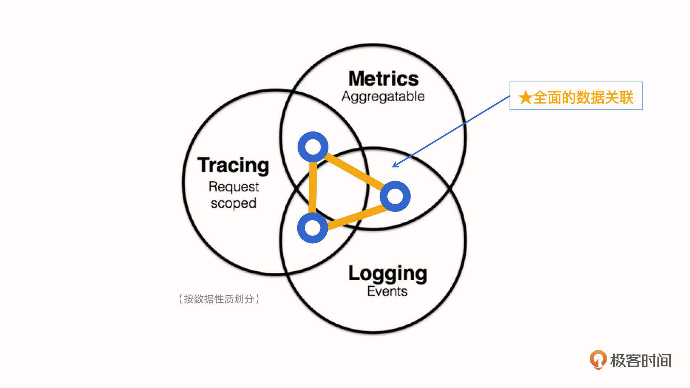
因此，可观测性适用于任何关心代码在生产环境中的运行质量的人。它可以监测和解决生产系统中复杂而新颖的问题。具体到岗位上：
可观测性能够架起开发人员和运维人员构建合作的桥梁，运维人员使用可观测性来发现问题，给故障现场提供足够的数据让开发人员进行分析，而开发人员可以使用可观测性来指导运维人员定位问题，并使用工具来质疑和验证假设；
此外，测试、运维、DevOps 工程师、SRE 工程师等角色都可以了解和学习可观测性，以此提高产品质量和服务可靠性。
可是，我们为什么需要可观测性？为什么是现在？其实，它是在日益迫切的系统和应用软件的维护需求下诞生的。
系统和应用是在一步步地升级与换代的。我进入互联网行业已经十几年了，这种感受有增无减。就拿我第一份工作支持的微软企业级邮件系统 Exchange Server 来说吧，Exchange Server 从最开始的单机版本，到后来分为了前端和后端服务器，再后来，为了更好地满足用户访问和负载需求，分为了边缘、传输、邮箱服务等多种角色的服务器，这时候如果碰到问题，再一个个去翻阅 Windows 的 Events 事件和 Exchange 的日志，效率就比较低了。
Exchange 邮件服务器架构的发展，只是应用软件发展的一个缩影。软件架构从单体应用到三层架构（前端 Web，应用 App 层，以及后端的数据库），再到现在的微服务架构，无疑是越来越复杂了。
如今，通过云平台，只需点击一个按钮，就可以操作和使用跨地理位置的基础设施或者微服务架构，它们具有可扩展性、可维护性、灵活性等多种优点。但这种部署方法也带来了一些意想不到的后果，当系统和应用出现问题的时候，找到问题的根本原因变得越来越难。
我们维护系统应用的手段也随之发生了很多变化。以前，面对不那么复杂的系统架构，我们常用的维护手段还是建立监控，然后制作一些仪表盘来展示各个层面指标的情况，再加上一些告警对各种指标的阈值进行监控和通知，这样就可以解决我们所说的 Known-Unknowns，也就是已知的未知问题（已经知道，但不理解）。也就是说，你凭借着经验或是感觉，能够很快定位到问题的根源。
但是现在，不仅排查故障的难度越来越大，错误还有了更多潜在的组合，传统的排障方式愈发没有效率。今天你面对的，更多的是未知的未知问题（既不理解，也不知道），即 Unknown-Unknowns。
而可观测性，就是解决这类未知的未知问题的必要手段。当系统中出现越来越多的新问题，当未知的故障组合越来越多，不断升级的复杂性让我们越来越有必要为系统和应用构建可观测性。
在这个可观测性的课程系列中，我将从下面几个方面为你展开讲解。
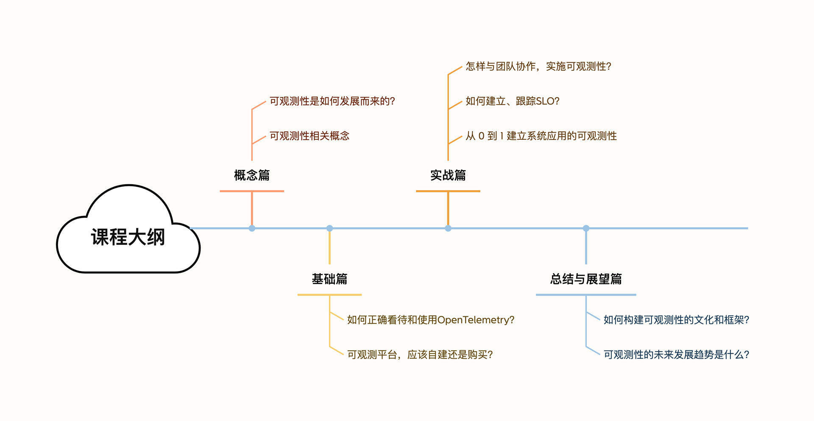
最后，再简单介绍一下我自己吧。我曾经就职于微软、HP、Dell EMC 等外企，从最初的技术支持，到售前以及项目交付，再到解决方案集成与验证，相关的工作可以说是做了一圈。从外企出来之后，我负责过多云管理产品，现在在观测云负责售前技术和客户服务工作。
计算机软件领域的可观测性，在国外是在 2018 年左右提出的，现在已经有了不少玩家，比如久负盛名的 DataDog。而在国内，去年的这个时候还极少看到相关的报道。到了今年，可观测性已经成为了非常热门的话题，甚至最近每周都能看到相关的线上直播。
但是，近几年的观察让我意识到，很多时候人们只是把原来传统的监控换了一个壳子，变成了可观测性。正所谓新瓶装旧酒，但其实这并不是真正意义上的可观测性。而这门课程的目标就是矫正这种观点，看清可观测性的本质和价值。
也希望这门课程，能够帮助你把可观测性真正落实到系统和应用的开发、测试、维护或是运营阶段，建立系统和服务可靠性的保障，提前发现潜在问题，快速定位根本原因，缩短 MTTGBTB（即 Mean Time to Get Back to Bed），每晚都能睡个好觉！
如果你也对一个可观测的系统有所憧憬，但却对细节和具体实现方法一知半解，那就加入我吧，我们课程中见！
扫描链接内小助手微信二维码，回复“可观测性”，加入学习交流群，一起交流进步～
你好，我是翁一磊。
这几年有一个新兴的概念在云计算时代下发展起来了，叫做可观测性。Gartner 在今年（2022 年度）的基础设施和运维自动化技术成熟度周期图里，把“可观测性”放在膨胀期波峰最顶端位置，可以说是风头正盛。
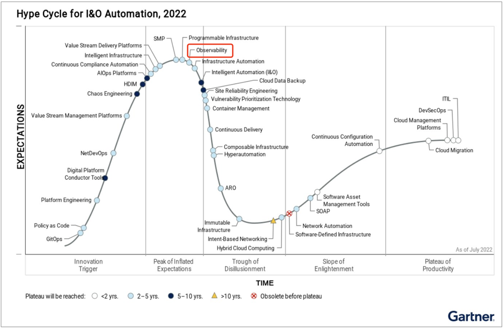
可观测性其实并不是一个新概念，它的英文是Observability，这个词是由工程师鲁道夫·卡尔曼提出的。他在自己1960年的论文中，用可观测性来描述数学领域的控制系统。可观测性被定义为一种度量方法，这是控制论的一部分，可观测性意味着从系统向外部输出的信息可以推断出系统内部状态的好坏。
在这个概念进入到计算机软件领域前，我们其实是通过监控这种方式去保障系统整体的稳定性的。可观测性和监控并不是一回事，但二者也有着联系，所以在我们正式进入可观测性的讲述之前，先来一起看看计算机和监控软件的发展史。
最早的电脑大部分是单机运行的，还没有网络的概念。那个时候在操作系统层面就有很多的工具软件可以供我们观测操作系统的运行状态。
对于 Windows 用户来说，最著名的工具就是任务管理器了，而 Linux 也有一堆类似 Top、PS 的命令帮助我们知道操作系统的运行状态。一部分应用为了进一步方便我们排查问题，设计出了日志，它可以输出文本展示应用的运行情况。如 Windows 的事件关联，Linux 的 syslog等。这个时期，我们是通过操作系统和应用本身的一些功能来了解并掌控系统的。
随着时代的进步，计算机在 20 世纪 90 年代进入了局域网时代，出现了C/S架构（Client/Server），服务器出现了。服务器，顾名思义就是服务别人的机器。客户端通过与该服务器进行数据交互来实现各种业务需求，这样，客户端之间就通过服务器协同起来了。
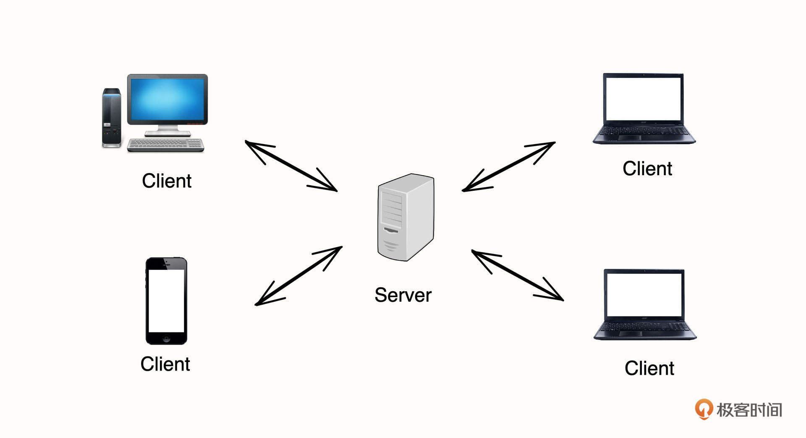
随后，开始出现早期的分布式系统。
最早，分布式系统的诉求是高可用。因为一旦服务器出现故障，客户端就无法正常工作了。接下来人们发现可以让不同的服务器处理不同的客户端请求，降低故障出现的频率。随着连接的客户端增多，业务越来越复杂性，“集群”的概念出现了。当时人们将服务器放在一起，通过交换机、路由器等网络设备串联起来。随着需要管理的服务器变多，人们不可能随时登录到每一台服务器上面去巡检系统的状态，这时候监控需求就变化了。
这一时期，网络监控工具开始出现，包括nmon、MTRG 以及 Big Brother 等等。这些工具大多都基于 SNMP 协议构建，可以跟踪网络硬件和资源的性能，还可以监控多个物理通信接口的运行状况和性能，同时提供系统多用户的活动和流量数据。
时间不停歇，技术不断发展，互联网出现之后，统一客户端产品的浏览器（最初来自于Netscape 网景）也问世了。这之后，我们有了一种统一的内容展示形态——Web。Web利用了 HTML 语言，而浏览器恰恰就是 HTML 语言解析器，它将文本变成了可视化的网页，而网景提供的编程语言 JavaScript 又实现了静态文本协议的动态化。
紧随着这些技术出现了一个概念叫B/S（Browser/Server，浏览器/服务器），意思是浏览器作为统一的客户端与服务器进行交互。由于互联网的兴起和越来越多用户的接入，出现了大量基于Web 技术的网站。网站一端放在服务器上，另一端通过浏览器获取服务器提供的服务。
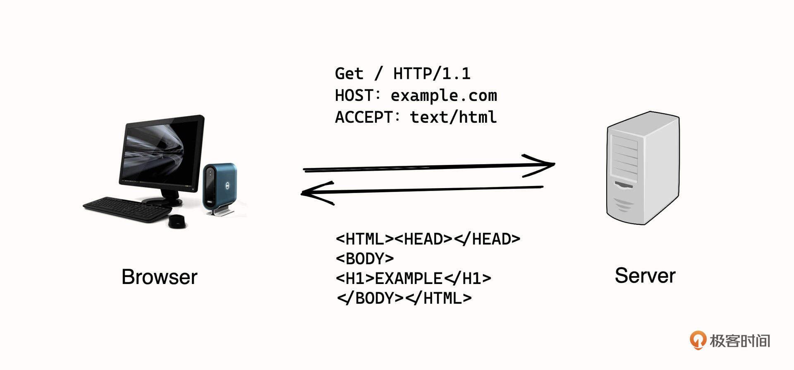
当时如果人们要创建自己的网站，需要将个人电脑接入互联网，不过，通常只有具备互联网地址的大学才方便操作。但后来，电信运营商提供了一种统一将服务器接入互联网的方式——IDC（互联网数据中心）。与之相对的，传统企业自己建设机房，大规模存放服务器，并用专线连接各个办公室，这种被称为数据中心。
数据中心最初的用户都是国家、银行、电信公司等，他们主要是为了满足机构内部的业务需求。后来，互联网公司将应用服务通过互联网提供给了全世界。互联网上的服务器变得越来越多，系统也变得越来越复杂，有些公司如网景开始提供类似网站托管服务，让用户可以快速拥有一个网站，而不再需要到 IDC 托管服务器了（这也是云计算的前身）。
然而，到21世纪初，越来越明显的是，网站和基于互联网的服务与典型的办公室局域网的监控需求不同。这开始促成了新一批监控工具的出现，例如 Cacti，Nagios和Zabbix。这些工具支持标准的 Internet 协议，可以在多个平台上使用，通常具有相当可扩展性，并且通常具有基于Web的界面。
Zabbix使用了C/S架构，它将操作系统中可被观测的数据收集起来统一查看，包括根据收集的数据对阈值（即某个值大于或者小于一定的值）进行告警。但由于 Zabbix 诞生的年代计算机性能并不强，能收集的系统数据很少，收集的数据也不完整，所以Zabbix 的数据收集颗粒度就比较粗。并且由于性能原因，日志数据通常也是经过客户端（Zabbix agent）判断后（比如日志关键字中包含某些内容），再作为信号传输到 Zabbix 的服务器端。
因此，Zabbix 作为一个简单、开源的监控软件，普及率很高，直到今天仍然有大量用户。但它本身也有很大局限，例如只能采集系统固有的简单可观测性指标，还有通过脚本方式处理信号的模式。
在 Zabbix 开始流行时，也出现了一些同类型的软件，但是它们的处理能力不同，有些侧重于网络，有些侧重于特种软件（如数据库专门的监控软件）。与此同时，另一个产品 Splunk 悄然问世了。Splunk的目的是将日志数据从集群中收集过来，最终统一处理统一分析。这样的话，数据量就非常大了。Splunk 有着特殊的存储结构和算法，相较于 Zabbix ，它能够更加完整地收集和分析处理这些海量数据，所以人们也常把 Splunk 当作一种数据库对待。
然而，这些工具通常仍然专注于功能和性能指标，并强调服务器和通信硬件以及相关问题。它们扩展了旧网络监控工具的覆盖范围，但它们保留了这些工具的大部分基本性质。21世纪的第一个十年将看到对一种新型监测工具的需求日益增长。
这个时候出现了一个伟大的公司：Google。谷歌以爬虫（也是客户端）的方式去扫描整个互联网网站，对其内容进行索引，然后让人们可以通过搜索引擎快速找到自己想访问的内容。
同一时刻，大量的互联网应用诞生，包括即时通讯、小说网站、互联网游戏等等。在这期间，有一个叫 Shay Banon 的程序员为了帮助妻子更快地搜索菜谱，创造了 Elasticsearch（一个搜索引擎技术，简称 Es），并为此成立了 Elastic 公司。
只不过 Elastic 公司并没有选择去做下一个 Google，它选择与 Splunk 成为了对手，推出了 ELK 方案（包括 ElasticSearch、Logstash和Kibana）。ELK方案和 Splunk 一样，都负责收集和管理海量的日志数据。
技术发展到这个阶段，海量日志的处理已经变得有可能了，ELK 作为开源软件成为了非常流行的选择，当然，Splunk 也不甘示弱，作为商业软件快速发展。这两者都被视为基于日志的监控高效解决方案。
大规模的互联网应用又催生了 CDN 技术，CDN 技术会将用户访问的内容以缓存方式存储在不同物理位置的服务器上，提高用户的访问速度。与此同时，一种新的监控方式开始出现，那就是拨测。它指的是网站或者互联网服务的提供者，为了确保自己的网站或服务是在线正常提供服务的，会模拟自己是客户端去访问自己的网站或服务，以确保网站没有异常，他们还可以分析网站在不同区域的访问加速情况，以确认 CDN 是否在正常工作。
2007 年，苹果发布了 iPhone，这个产品的诞生彻底改变和加速了互联网的发展。Google 也针锋相对地推出了 Android 。无线通讯技术的高速发展，人类快速进入了移动互联网时代。
移动互联网带来了两个改变。第一个，由于乔布斯追求极致的体验，加上当时移动设备的计算能力，应用软件（Apps）这种移动操作系统上的客户端悄然出现（我们用Program代指 PC 上的应用，用 App 来指代移动端的应用）；而另一个改变更加巨大，全球大量的设备接入了互联网，带来了大量的用户和访问。
为了管理海量的服务器，VMware 最早推出了虚拟化的方案。这个方案一开始只是想要让个人电脑适配不同的操作系统，到后来发展为将一个物理服务器集群以软件分割的方式来创建更多的虚拟机（Virtual Machine，简称 VM），以此提升服务器的利用率。2006年，亚马逊利用这项技术悄然推出了一个互联网服务 AWS（Amazon Web Service），最初是利用亚马逊的闲置服务器提供网站的大规模托管服务，而今天这个服务已经家喻户晓了，那就是云计算。
随之，游戏变成了互联网游戏，有了互联网的视频网站，有了全国甚至全球性质的电商、打车、外卖等互联网服务，企业级软件也开始以 PaaS、SaaS 的方式，通过互联网加浏览器或者移动客户端的方式提供服务了。
而为了满足互联网的各种各样的服务，以及移动设备带来的不同的应用形态，大量的新形态的数据库、消息队列、中间件被创造出来了，包括 NoSQL，其实就是一系列满足特定场景需要的数据库，而单一的关系型数据已经不能满足客户的需求了（数据库历史也很长，就不展开了）。
海量的用户必然意味着庞大的数据量，为了分析这些数据，大数据这个概念也诞生了。为了顺应时代潮流，满足用户对于服务越来越高的要求，互联网公司的开发测试环节变得越来越敏捷，DevOps 出现了。尤其最近几年，为了让应用更敏捷，更方便管理，容器技术和为了适应容器技术的云原生概念出现了（云原生是基于容器编排框架 Kubernetes 构建的生态软件的统称）。
这个时候，人们为了进一步提升应用性能，提出了一个 APM 的概念（Application Performance Monitering），它旨在将服务端和客户端的代码执行情况统一地收集起来，不仅仅是解决故障的问题，更为了提升应用的性能。很多厂商推出了相应的 APM 服务。但这也带来了一个问题，一个复杂的互联网的 IT 服务需要全面被监测起来才能完整地掌控这套系统，因此我们需要大量的监控类产品，从基础设施、云、云原生、数据库、中间件、大数据、拨测到安全。
需要监测的对象从原先的服务器，变成虚拟机，又变成现在的容器。同时我们需要监测更多的数据库中间件、AWS 云服务，甚至部署在不同云平台上的应用，传统的 Zabbix 已经无法承担这么多的监控任务。
为了解决这些数据观测问题，开源世界出现了基于时序数据库的监控软件，如Prometheus、Telegraf + InfluxDB 等，APM 则出现了 ZipKin、Jaeger、Pinpoint、Skywalking 这些软件。然而，如果我们要完整地“观测”一个互联网系统，还是需要将各种形态的开源监控产品组合起来使用。
在商业世界里，大家都在往这个方向靠拢：
OpenTelemetry 这个组织的出现标志着业界意识的产生，也就是，我们需要将系统的可观测性变成一种统一的标准和规范。OpenTelemetry 致力于推动更多的应用和服务遵循这一规范，同时也会提供相应的可观测性能力。在专栏的第四讲，我们还会对它进行更详细的讲解。
刚才，我们几乎是把整个计算机监控和可观测性的发展史粗略地讲了一遍。这里我再总结一下。
你可以看到，特定产品的发展和计算机本身以及互联网的发展其实是密不可分的。
但是“可观测性”的具体内涵是什么？它跟监控又有什么实质性的差别？下节课我们会逐一分析。
在这节课的最后，留给你一道思考题。
你在平时工作中使用过哪些监控工具，这些工具哪些地方好用，哪些地方需要改善？
欢迎你在留言区和我交流讨论，我们下节课见！
你好，我是翁一磊。
上节课，我们介绍了计算机系统监控的发展历史，这节课我们来具体聊一聊可观测性，以及大家对于可观测性的一些误解。
就像我们在开篇词中说的，可观测性强调的是可以从系统向外部输出的信息来推断出系统内部状态的好坏。
当我们把“可观测性”这个概念挪到软件系统时，其实强调的也是一种度量能力，一个软件应用程序具有可观测性，意味着它能够让我们通过各种维度和各种角度去分析和理解这个系统当前所处的任何状态，无论这种状态有多奇怪、无论我们之前有没有遇到过，都不需要预先定义或预测。如果能够在不发布新代码（如增加一个用于调试的日志）的情况下理解任何奇怪或不确定性的状态，那么我们的系统就具备可观测性。
因此，可观测性是描述人们如何与他们的复杂系统互动，以及如何理解这些复杂系统的概念。如果你接受这个定义，那么看看接下来这些问题：
这些问题，我们都会在专栏中一一解答。不过别着急，这节课我们还是要先把可观测性的概念和内涵理清楚。
既然选择学习这门课程，你八成听过可观测性的“三大支柱”：指标（metrics），日志（logs）和链路追踪（Tracing）。但是，指标、日志再加上链路追踪，真的就是可观测性吗？让我们先来看一下这三类数据的含义。
指标：是在⼀段时间内测量的数值。它包括特定属性，例如时间戳、名称、键和值。和⽇志不同，指标在默认情况下是结构化的，这会让查询和优化存储变得更加容易。
例如：2022/05/20 12:48:22，CPU usage user，23.87%，它就表示 CPU 运行在用户态的时间占比在这一刻为 23.87%。
日志：是对特定时间发⽣的事件的⽂本记录。日志一般是非结构化字符串，会在程序执行期间被写入磁盘。每个请求会产生一行或者多行的日志，每个日志行可能包含 1-5 个维度的有用数据（例如客户端 IP，时间戳，调用方法，响应码等等）。当系统出现问题时，⽇志通常也是工程师⾸先查看的地⽅。常见的日志格式是下面的样子。
127.0.0.1 - - [24/Mar/2021:13:54:19 +0800] "GET /basic_status HTTP/1.1" 200 97 "-" "Mozilla/5.0 (Macintosh; Intel Mac OS X 11_1_0) AppleWebKit/537.36 (KHTML, like Gecko) Chrome/89.0.4389.72 Safari/537.36"
链路追踪：有时候也被称为分布式追踪（Distributed Tracing），表示请求通过分布式系统的端到端的路径。当请求通过主机系统时， 它执⾏的每个操作被称为“跨度”（Span）。
举个分布式调用的例子：客户端发起请求，请求首先到达负载均衡器，经过认证服务、系统服务，然后请求资源，最终返回结果；那这里面的操作就包括请求网关、身份认证、请求资源、以及返回结果等。
链路追踪一般会通过一个可视化的瀑布图展现出来。瀑布图展示了用于调试的请求的每个阶段，以及每个部分的开始时间和持续时长。
比方说，在下图这个例子里，瀑布图由 Span 组成。特定的链路追踪中的 Span 可能是根 Span（也就是最顶层的 Span），也可能是根 Span 以下的 Span。Span还可能包含 Span，这种常被称为父子关系。比如，如果服务 B 调用服务 B-1，服务 B-1 调用 B-2，那么在这条链路中，Span B 是 Span B-1 的父亲 Span，Span B-1 是 Span B-2 的父亲 Span。
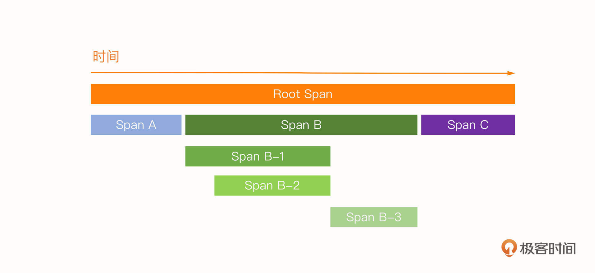
然而，仅仅是收集这些数据类并不能保证系统的可观测性，尤其是当你彼此独⽴地使⽤它们时。从根本上来说，指标、日志和链路追踪只是数据类型，与可观测性无关。
另一方面，这三种数据类型也有着局限性。
由于指标最大的特点是聚合性，它生成的数值反映了预定义时间段内系统状态的汇总报告，在此期间处于活动状态的所有请求的行为都会汇总为一个数值，因此缺乏细颗粒度。同时这些指标很可能都是彼此不相关的，没有关联性。
例如：page_load_time 指标可能会检查在最后 5 秒间加载所有活动页面所花费的平均时间；requests_per_second 指标可能会检查任何给定服务在最后一秒内打开的 HTTP 连接数。这就导致能够挖掘的信息的颗粒度是比较粗的，如果在 5 秒内发生了一千个离散事件，从 page_load_time 指标中根本无法获取某一事件的具体情况。
当然，这并不是说指标完全没用，指标对于静态仪表板的构建、随时间变化的趋势分析、或监控维度是否保持在定义的阈值内很有用，但这些并不是可观测性，因为这些信息的颗粒度在做故障排查或根因分析时是远远不够的。
日志文件本质上是分散的事件，是一大块非结构化文本，旨在方便人类阅读，但要达到这个目的，日志通常要将一个事件的所有细节分成多行文本。这样在生产环境中，日志通常散布在数以百万计的文本行中，通过使用某种类型的日志文件解析器才可以完成对它们的搜索。解析器将日志数据拆分为信息块，并尝试以有意义的方式对它们进行分组。但是，对于非结构化数据，解析变得复杂，因为不同类型的日志文件存在不同的格式化规则里（或根本没有规则）。
针对这一点的解决方案是创建结构化日志数据，例如将上面的日志解析成下面这样。
结构化日志是机器可解析的，如果它们被重新设计为类似于结构化事件的话，可以帮助我们实现可观测的目标。关于结构化事件，后面还会做进一步介绍。
"fields": {
"agent":"Mozilla/5.0 (Macintosh; Intel Mac OS X 11_1_0) AppleWebKit/537.36 (KHTML, like Gecko) Chrome/89.0.4389.72 Safari/537.36",
"browser":"Chrome",
"browserVer":"89.0.4389.72",
"bytes":97,
"client_ip":"127.0.0.1",
"engine":"AppleWebKit",
"engineVer":"537.36",
"http_method":"GET",
"http_url":"/basic_status",
"http_version":"1.1",
"isBot":false,
"isMobile":false,
"message":"127.0.0.1 - - [24/Mar/2021:13:54:19 +0800] "GET /basic_status HTTP/1.1" 200 97 "-" "Mozilla/5.0 (Macintosh; Intel Mac OS X 11_1_0) AppleWebKit/537.36 (KHTML, like Gecko) Chrome/89.0.4389.72 Safari/537.36"",
"os":"Intel Mac OS X 11_1_0",
"referrer":"-",
"status":"OK",
"status_code":200,
"ua":"Macintosh"
},
链路追踪检测的主要问题是，如果仅靠开发人员“插桩”（英文 Instrument，有些地方也翻译成埋点，是指将有关系统状态的数据发送到监测系统）他们的代码是不够的。大量应用程序是使用可能需要额外工具的开源框架或库构建的。这在多语言架构的地方变得更加具有挑战性，因为要考虑到每种语言、框架和协议的不同。
同时，增加插桩的成本也是比较高的，很难真正做到全面覆盖。这样的方式只适用于具体的业务场景，如果其他地方有类似的需要，就需要再次插桩。而且随着产品的不断迭代，我们很难一次性把需要插桩的地方都考虑周全，这就会带来反复的工作，也可能会涉及多次上线，增加了工作量的同时也降低了系统的可靠性。另一方面，大量的插桩也会占用比较高的计算资源。
总之，指标、日志和链路追踪只是数据的类型，本身并不代表可观测性。可观测性也不是供应商提供的一种技术，而是你构建的系统的属性，就像可用性、高可用性和稳定性这些一样。
设计和构建可观测系统的目标是确保系统运行时，操作员可以检测到服务停机、错误和响应缓慢等不良行为，并可以通过足够的信息来确定问题的根本原因。
就像我在前面介绍的，我们对软件系统的“可观测性”的定义是一种度量能力，能够帮助你更好地理解和解释系统当前所处的任何状态，无论这种状态或者问题是否在之前出现过。而结构化的事件（Structured Events）就是可观测性的基础。
事件指的是特定请求与服务交互时所有信息的记录，通过事件能了解生产环境中服务所受到的影响。
那什么是结构化的事件呢？
在请求第一次进入服务时，会有一个空的地图（Map）被初始化出来。在该请求的生命周期内发生的任何细节（包括唯一的 ID、变量值、标头、请求传递的每个参数、执行时间、对远程服务的任何调用、这些远程调用的执行时间），或任何可能在之后的调试中有价值的上下文，都会附加到这个地图中。然后，当请求即将退出或出错时，刚刚所发生的事情都被丰富地记录了下来。写入该地图的数据被组织和格式化为键值对，以便于搜索。换句话说，这些数据就是结构化的事件。
这样做的好处是什么呢？
当你调试服务中的问题时，可以相互比较结构化事件，及时发现异常。当某些事件的行为与其他事件明显不同时，你可以尝试确定这些异常值的共同点。探索这些异常值，需要分析可能与你的调查相关的事件，按照这些事件中所包含的不同维度（甚至是不同维度的组合）进行过滤和分组。另一方面，对你有帮助的信息可能包含不特定于任何给定请求的运行时信息（例如容器信息或版本信息），也包含有关通过服务的每个请求的信息（例如购物车 ID、用户 ID 或会话令牌等等）。这两种类型的数据都对调试很有用。
所有这些数据都可以用于调试并存储在你的事件中。它们是任意“宽度”的事件，因为你需要的调试数据可能包含大量字段，或是来自任意维度，而不应该有实际限制。如果要分析一个异常的状态，具有可观测性的调试方式就是尽量保留每一个请求的上下文，这样你就可以针对这个上下文分析定位修复这个Bug或者调整相关的环境配置了。
所以我们说，数据的高基数和高维度，这将成为能够发现隐藏在复杂系统架构中的其他隐藏问题的关键组成部分。我们分开来看一下。
在数据库的概念中，基数是指包含在一个集合中的唯一值的数量。低基数意味着这一列在其集合中有很多重复的值；高基数意味着该列包含很大比例的完全唯一的值。
举例来说，在一个包含1亿条用户记录的集合中，任何通用唯一标识符（UUID）都是高基数的，另外用户名也具有很高的基数（当然会低于UUID，因为有些名称可能是重复的）。另一方面，像性别这样的领域的基数就会很低。再举个例子，假设所有用户都是人类，像物种这样的字段可能具有最低的基数。
基数对于可观测性很重要，因为高基数信息在调试或理解系统的数据时是最有用的。如果能够按照这些字段，例如 userid、cartid、requestid 或任何其他 ID （host、container_name、hostname、version、span 等），根据其中的唯一 ID 来查询数据，是在“大海”中精确定位每一滴“水滴”的最佳方法。你总是可以通过聚合采样高基数的值获得较低基数的值（例如，通过首字母存储姓氏），但没法反过来。
基数指的是数据中值的唯一性，维度指的则是数据中键（key）的数量。在可观测系统中，遥测数据被生成为任意“宽度”的结构化事件，它们可以而且应该包含数百甚至数千个键值对（即维度）。事件范围越广，事件发生时获取的上下文就越丰富，在以后调试时，就越容易定义问题的原因。
假设你有一个事件模式，每个事件定义了六个高基数维度：时间、应用、主机、用户、端点以及状态。通过这六个维度，你可以创建查询，分析任何维度组合，以发现可能导致异常的相关模式。例如，你可以检索：“过去半小时内，发生在主机 host001 上的所有的502错误请求”，或是“由用户 vipuser001 在做数据导出时产生的所有403错误请求”。
也就是说，只需六个基本维度，你就可以通过一组有用的条件，来确定你的应用程序系统中可能发生的情况。但是在现代系统中，可能发生的故障的排列方式是无限的，只在传统监控数据中捕捉几个基本维度是不够的。现在想象一下，除了六个维度之外，你还可以关注数百乃至数千个包含无数细节、值、计数器或字符串的维度，这些维度在将来的某个时候可能对你的调试有帮助。例如，你可以包含像这样的维度：
create_time
component
date_ns
duration
endpoint
env
http.route
host
operation
parent_id
pid
resource
service
servlet.path
source
source_type
start
span_id
span_type
status
trace.id
thread.id
thread_name
version
有了更多可用的维度，你就可以检测各种事件，在任何一组服务请求之间建立高度复杂的关联了。数据的维度越高，就越有可能发现应用程序行为中隐藏的、难以捉摸的模式。在后面的章节，我们还会更详细地讲解这部分内容。
好了，这节课就讲到这里，我来小结一下。
尽管“可观测性”这个专有名词已经出现几十年了，但在软件系统中它还是一个新事物，它带来了一些新的考虑和特性。可观测性的出现，其实也刚好符合计算机领域现阶段的需求，由于现代系统引入了额外的复杂性，系统的故障比以往任何时候都更难预测、检测和修复。
为了减轻这种复杂性，工程团队现在必须能够以灵活的方式不断收集遥测数据，及时调试问题，而不需要首先预知故障可能如何发生。可观测性让工程师能够以灵活的方式分析遥测数据，快速找到未知问题的根源。
可观测性通常被错误地描述为包含指标、日志和追踪的“三个支柱”，但其实这些只是遥测数据类型。如果我们必须拥有可观测性的三个支柱，那么它们应该是支持高基数、高维度和可探索性工具。下节课，我们会探讨可观测性与传统系统监控方法的不同之处。
在这节课的最后，留给你一道思考题。
你在使用监控工具对系统和应用进行监控的时候，遇到过哪些难以依靠单纯的监控来解决的问题？后来是如何找到问题原因的？
欢迎你在留言区和我交流讨论，我们下节课见！
你好，我是翁一磊。
上节课，我们了解了可观测性的基本概念，这节课我们重点介绍在进行调试或者问题排查的时候，使用可观测性工具和使用传统监控工具有什么不同。通过这种对比，相信你可以更好地理解可观测性和传统监控的区别。
从运维的角度来看，肯定少不了通过仪表盘来对系统进行监控。传统的监控系统主要用于收集和汇总一定时间间隔内的性能指标，运维同学需要依靠这些指标的变化趋势来分析系统的性能，基于过往的经验判断系统是否正常，哪里可能有问题；或者通过设定监控指标的阈值进行告警。
将这些指标以图表形式展现出来，各种各样图表的组合以及自定义的视图便构成了一个个仪表盘。我们通常会为每一个系统服务设置一个静态的仪表盘，通过它了解系统的运行状态。
然而，当我们在审视仪表盘的各项视图，或是收到告警的时候，我们知道某项指标超出了阈值（比如生产环境的集群 CPU 平均使用率超过了 90%），但却不能完全了解系统究竟发生了什么。换句话说，不知道是什么导致了 CPU 的平均使用率过高。
另一方面，当我们想使用仪表盘来进一步分析问题的时候，会受制于这些仪表盘的预设条件，只能查看预设的维度；如果想分析其他的维度，可能就进行不下去了。因为这个维度的标签很可能并没有提前被添加进来，也就不能提供数据的聚合了。
让我们再来看一个更加具体的例子。如果你是运维工程师，你应该会很熟悉下面这样的场景。
这是一个工作日的早晨，你坐到办公桌前，打开电脑，首先要做的事情就是看一下目前系统的整体情况。于是你开始浏览一组配置好的仪表盘，或者一个大屏，希望可以快速地看到系统的各个方面、各种组件以及它们的健康状态。
你查看着仪表盘上的各个图表和相关指标，突然发现仪表盘左下角某个区域的曲线超过了设定的基线，根据你的经验，你会感觉这是数据库的问题，因为之前也发生过类似的症状。于是你快速地查看了一下数据库的状态，想要确认你的怀疑。果不其然，你的怀疑被证实了，紧接着你马上处理和解决了问题。
类似地，你的脑海中可能还记录了很多发现问题模式的组合。随着时间的推移，你已经学会了通过观测仪表盘中的各种特定指标来预测问题的来源。你可以问问自己，在排查故障的全过程中，当你在系统的各个组件之间跳转的时候，你在多大的程度上依赖这些模式的组合甚至说是你的直觉？通常，我们重视这种直觉，多年来也确实证实它可以给我们带来很多便利和好处。
然而现如今，随着容器化的趋势、容器编排平台（例如 Kubernetes）的兴起、系统架构向微服务的转变、混合持久化（多种数据库，消息队列）的普遍使用，同时服务网格的引入、自动弹性伸缩实例的流行，甚至是无服务器（Serverless）的出现以及无数相关的 SaaS 服务的涌现，要将这些不同的工具串在一起形成一个现代系统体系结构，可能意味着一个请求在到达你控制的代码时，已经执行了多次跳转。
在云原生系统中，进行调试最困难的不再是理解代码的运行方式，而是找到有问题的代码在系统中的位置。这时候，通过仪表盘来查看哪个节点或服务速度较慢是不太可能的，因为这些系统中的分布式请求经常在不同的节点中循环，要在这些系统中找到性能瓶颈非常具有挑战性。当某个组件或者服务变慢了，一切都变慢了。
更有挑战性的是，因为云原生系统通常作为平台运行，代码可能存在于你甚至无法控制的系统中（比如云上的云原生服务或是 PaaS 资源）。
在现代世界中，每个请求都有可能跨越任意数量的服务和机器，这让与这些请求相关的几十个指标产生分裂，如果我们想推断在这个过程中各种请求跳转发生了什么，就必须将这些相关的指标都连接起来。而如果继续通过传统的设定阈值的方式进行故障定位，除非你能提前了解可能会在哪些节点出现问题，否则你将完全不知道故障是如何发生的，甚至都没法设定相关的阈值。
这种传统的监控方法是完全被动的，但是许多团队接受并且一直在使用这种最简单的方法排除故障。所以你会发现，有时候自己总是在被动响应、不停地四处灭火。
由于业务架构微服务化，加上日益普及的敏捷开发模式，业务的迭代速度变得非常快，这会导致仪表盘中配置的各种指标随着时间快速失效。结果就是，以往的告警和经验模式逐渐失去作用。每次出现故障，复盘的结果就是再增加一些指标或是一些告警，然而这些告警将来可能再也不会被触发。
因为本质上来说，依赖传统的监控系统，解决的是 Known-Unknowns 的问题（即你能够感知、但是不理解的问题）。比如说 CPU 使用率达到 90% 触发了告警，但却不清楚是什么原因导致了 CPU 的使用率如此之高。对于越来越多第一次发生的事情，你不可能知道这些本来你就不知道的情况，即 Unknown-Unknowns（即你既不理解、也没有感知的问题）。
从过去的经验来看，我们面对的系统往往是一个单一的应用，系统的所有组件可能都是我们自己部署的，我们对它们非常熟悉和了解。你可以把不同来源的数据通过直觉整合起来，形成自己对问题的判断。
在过去很长一段时间里，我们都认为它是最正常的运维行为。然而，监控毕竟是一种被动反应性方法，它最适合检测已知的问题和过去遇到过的情况。但是，随着系统复杂性的不断增加，系统性能问题的背后，涉及越来越繁多的相关性和可能性，很多问题超出了任何个人或团队能够直观理解的范畴，所以是时候引入突破这种被动和限制性的工具和方法了。
这时候可观测性就该出场了。可观测性的概念我们前面也讲过，它的重点就是通过查看和分析高维度和高基数数据，发现埋藏在复杂系统架构中的隐藏问题，而且不需要事先预测问题可能发生在哪里，以及问题发生的模式，这是可观测性和监控的第一个区别。
可观测性和监控的第二个区别是，关注的维度不一样。监控更加关注基础设施的资源情况，因为监控工具实在太多了。中大型的企业可能要部署多套监控软件，针对不同基础设施、不同的产品组件（例如中间件、数据库等）来使用不同的产品或工具。这种就造成了资源浪费，还会出现学习曲线太长，认知成本、协同成本、系统更新成本太高等一系列问题。
将一切整合起来的可观测性就和原来的监控不同了：可观测平台瞄准的恰恰是应用软件本身。可观测性的目标是保障应用软件的可靠性和稳定性，解决的是应用软件在运行时的调试问题。我相信除了运维需要通过可观测性解决系统的问题之外，开发人员也都希望自己能够随时随地调试自己的代码，尤其是生产环境，从而确保系统的可靠性（有关团队合作的一些最佳实践，在后面的课程中我会进一步详细说明）。
对于应用程序代码，最重要的指标是用户的体验。底层系统可能基本上是健康的，但用户请求仍然可能因为多种原因而失败。如前几讲所述，分布式系统使这些类型的问题更难检测和理解。所以，使用高基数字段（用户 ID、购物车 ID 等）作为观察特定客户体验的一种方式的能力变得至关重要。尤其是在持续交付的现代世界中，随着新版本代码的不断部署，软件关注点总是在变化和变化。可观测性提供了一种提出适当问题的方法，可以实时解决这些问题。
可观测性和监控的第三个区别，体现在数据收集的全面性（不仅仅是指标数据）和关联性上。
不论你是运维工程师，还是开发工程师，都可以通过工具或者产品构建自己在线系统的可观测性，我们的最终目标都是用实时的数据来调试自己的线上环境。
构建自身系统完整的可观测性需要的能力非常广泛，一般情况下，对于大部分企业来说，这是一个包括数据收集、集成、展示在内的综合性系统工程。它可能涵盖的技术从底层操作系统，到各种语言环境网络协议，甚至还涉及前端用户访问数据，eBPF，Profiling 等等，这是一个非常庞大的知识结构。而且，仅仅收集数据也是不够的，利用数据所提供的可视化、交互性来真正意义上让可观测性落地才是核心。
所以从构建可观测性的角度来说，它不仅包括数据收集，还包括数据的一致性和关联关系，这样才能更好地让不同维度的数据通过可视化友好地进行交互。而传统的监控主要还是关注基础设施层面的资源状态和使用情况。
有了数据，我们就要在这个基础上进行故障排查了。
如果只是站在运维监控的角度，可观测性似乎是一个数据量更大更全的、但反而让运维不知道从哪开始的监控系统。但我认为，可观测性强调的是从应用和业务维度，用各种数据垂直且实时地描述这个应用的全貌，它采用的不是传统的分层逻辑，不是用不同的独立的监控系统分开关注每一层的情况（例如基础设施、中间件、数据库、应用服务端代码、客户端等等）。
可观测性和传统监控的差异，也解释了为什么很多传统运维的仪表盘在分布式架构中用处越来越小，因为对于复杂系统来说，很多之前没有发生过的问题，单靠仪表盘并不能有效地发现根本原因。而可观测性强调的是高维度和高基数的数据，通过这些数据的关联，可观测允许我们从任何一个角度分析问题，而不是依靠直觉和经验。
举个例子，针对一个内存溢出（即我们常说的 OOM）的问题，临时增加内存可能可以解决问题，但这种方式并没有找到问题的根源，下一次这个问题很可能还会出现；根本的解决方法，还是通过可观测性找到导致内存溢出的根本原因，知道是哪个进程有问题，甚至是哪段代码导致的这个问题。
可观测性提供了一种不同的诊断方法，它能够帮助你研究任何系统，无论这个系统多么复杂，不需要依靠经验或“直觉”。有了可观测性工具，我们不再只能依赖团队中最有经验的工程师，而是可以全面收集和关联数据，通过探索性的问题来询问系统和应用，通过数据分析和发现来进一步开放式地查询和下钻，直到找到问题或故障的根本原因。
这节课就讲到这里，我们小结一下。
基于监控的调试方法（包括使用指标和仪表盘，结合专家知识对生产环境中的问题进行分类）是软件行业多年以来的一种普遍实践。在数据量有限的单一应用架构时代，考虑到传统系统较为简单，依靠人类的经验和直觉来检测系统问题是高效和有意义的。然而，现代应用基础系统的复杂性和大规模，已经让这种方法越来越站不住脚了。
相比较而言，可观测性工具将高基数、高维度的遥测数据放在一起展现，方便我们轻松地进行切片、放大、缩小，或跟随“面包屑”找到最终答案。此外，通过在一个工具中保持这种上下文，问题的分析依靠的就是明确的数据，而不再是经验和直觉了。可观测性将关键知识从最有经验的工程师的头脑中转移到共享现实中，任何工程师都可以根据需要进行探索。
在下一节中，我将为你讲解开源和厂商中立的 OpenTelemetry 项目，以及如何通过它来建立可观测性。
在这节课的最后，留给你一道思考题。
你在平时的工作中，有没有依靠直觉和经验来解决问题的经历？后来问题重现了吗，有没有彻底解决？如果有，你又是如何找到根本原因的？
另外，我也想给你推荐一本有关可观测性的书籍，_Observability Engineering_，这个专栏也参考了书中的一些内容。当然，国内外对可观测性的理解和实践都有所不同，我也更多地在专栏中加入了我自己的理解与感悟。有英文功底的同学可以从这里下载电子版进行阅读，相信这本书可以让你了解到可观测性更多维度的知识。
如果你有什么新的收获，也欢迎在留言区和我交流，我们下节课见！
你好，我是翁一磊。
通过之前概念篇的介绍，相信你已经了解了可观测性的基本概念还有它和传统监控的区别。这节课，我们来看看 OpenTelemetry ，它目前已经是可观测领域非常成熟和热门的标准和规范了。
OpenTelemetry 简称 OTel， 是 CNCF （ Cloud Native Computing Foundation，云原生计算基金会，是一个开源软件基金会，致力于云原生技术的普及和可持续发展） 的一个可观测性项目。
OpenTelemetry 旨在提供可观测性领域的标准化方案，解决遥测数据的数据建模、采集、处理、导出等标准化问题，并能够将这些数据发送到你选择的后端（开源或商业均可）。这样你就可以建立不被供应商锁定的可观测，灵活地更改后端，不需要再次更改代码，重新进行插桩（Instrument）了。
OpenTelemetry 不是凭空出现的。在 OpenTelemetry 出现之前，还出现过 OpenTracing 和 OpenCensus 两套标准。
我在第 1 讲监控的历史中，就提到过应用性能监控 APM。目前在这一领域有Jaeger、Pinpoint、Zipkin等多个开源产品，商业玩家也有很多，可谓竞争非常激烈。然而，这也带来了一个问题，那就是每一家都有一套自己的数据采集标准和 SDK，实现上各不相同，很难实现厂商或者技术中立。
OpenTracing 制定了一套与平台和厂商无关的协议标准，让开发人员能够方便地添加或更换底层 APM 的实现。2016 年 11 月，CNCF 接受 OpenTracing 成为第三个项目，前两个相信你早就知道了，就是 Kubernetes 和 Prometheus。
另一套标准 OpenCensus 是谷歌发起的，它和 OpenTracing 最大的不同之处在于，除了链路追踪，它还把指标也包括进来。这样就可以在 OpenCensus 上做基础的指标监控了。后来微软也宣布加入 OpenCensus。
OpenTracing 和 OpenCensus，这两套框架都有很多追随者，而且二者都想统一对方。但是从功能和特性上来看，它们各有优缺点，半斤八两。所谓天下大势，合久必分，分久必合，既然没办法分个高低，那统一就是大势所趋。于是， OpenTelemetry 横空出世。
OpenTelemetry可以同时兼容 OpenTracing 和 OpenCensus，支持各种语言和后端，代表了一种厂商中立的态度，它可以在不改变现有工具的情况下捕获遥测数据并将其传输到后端。
OpenTelemetry 主要包括了下面三个部分：
下面，我们就详细了解一下这几部分。
跨语言规范描述了所有实现的跨语言要求和数据模型，包括遥测客户端内部实现所需要的标准和定义，也包含与外部通信时需要实现的协议规范。跨语言规范主要包含了下面几类。
这里要重点说一下这个 OTLP 协议，它的全称是 OpenTelemetry Protocol，它是 OpenTelemetry 原生的遥测信号传递协议，虽然 OpenTelemetry 项目组件支持了Zipkin v2 或 Jaeger Thrift 协议格式的实现，但这种支持都是以第三方贡献库的形式提供的。只有 OTLP 是 OpenTelemetry 官方原生支持的格式。OTLP 的数据模型定义是基于 ProtoBuf 完成的，如果你需要实现一套可以收集 OTLP 遥测数据的后端服务，那就需要了解里面的内容（可以参考代码仓库 opentelemetry-proto）。
API 可以让开发者对应用程序代码进行插桩（Instrument），而 SDK 是 API 的具体实现，是和开发语言相关的。
在软件业内，在应用中进行插桩是指将系统状态数据发送到后端，例如日志或者监控系统。发送的数据叫做 Telemetry，也就是遥测数据，包括日志、指标以及追踪等。这些数据记录了处理特定请求时的代码行为，可以对应用系统的状态进行分析。
插桩有两种方式，一是通过手动增加代码生成遥测数据，二是以探针的方式自动收集数据。
每种方案都有特定的、自定义的步骤来产生和转移符合产品后端存储的遥测数据，这就带来了工具或者厂商的绑定性，如果想把遥测数据发送到其他产品，就不得不使用其他的插件库重复整个插桩过程。而这正是 OpenTelemetry 想要解决的问题。
OpenTelemetry 为每种语言提供了基础的监测客户端 API 和 SDK。这些包一般都是根据前面介绍的规范里的定义，又结合了语言自身的特点，实现了在客户端采集遥测数据的基本能力。
如果直接使用这些 SDK，很多操作需要修改应用代码。例如，添加链路追踪的监测点，记录字段信息等。这种方式具有代码侵入性，使用门槛较高。但另一方面，你也可以使用 OpenTelemetry 公共组件的设计模式或语言特性等来降低使用门槛。插桩的具体方式我就不在这里赘述了，你可以参考 OpenTelemetry 有关插桩的官方文档。
OpenTelemetry 架构的第三部分是接收、转换和导出遥测数据的工具（OpenTelemetry Collector），这是我认为 OpenTelemetry 组件中最重要的部分，之后我们都将其简称为 Collector。
Collector 针对如何接收、处理和导出遥测数据提供了与供应商无关的实现，消除了运行、操作和维护多个代理/收集器的需要，它支持将开源可观测性数据格式（例如 Jaeger、Prometheus 等）发送到一个或多个开源或商业后端。
在 Collector 的内部，有一套负责接收、处理和导出数据的流程被称为 Pipeline。 每个 Pipeline 由下面三部分组件组合而成。
Collector 的架构可以参考下面这张示意图：
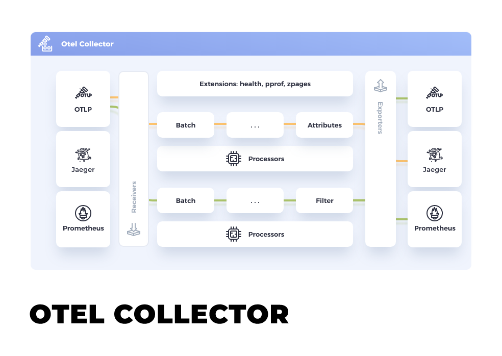
从部署的角度来说，Collector 有下面两种模式。
接下来，我们看看 OpenTelemetry 的实现方案。OpenTelemetry 有很多种组合和实现方案，我们分别来了解一下 OpenTelemetry 在三种不同技术架构下的使用方式。
作为经典的对各种遥测数据的处理架构，开源工具可将不同类型的数据存储在不同的平台，比如日志存放在ELK，追踪存放在 Jaeger 这类的 APM 工具，而指标保存在 Prometheus 并通过 Grafana 进行视图展示。组件的整体配置如下图所示：
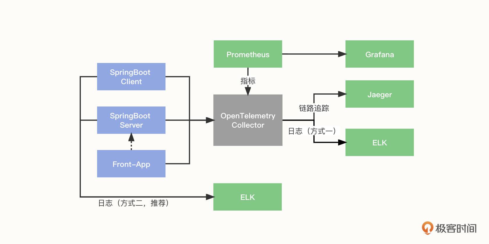
我们以一个 SpringBoot 应用为例，解读一下数据采集和传输的过程：
日志有下面两种收集方式。
方式一，通过 OTLP 上报日志：应用服务端和客户端将日志通过 Exporter 推送到 Collector，再通过 Collector 输出到 Elasticsearch。 但由于 OpenTelemetry 在 log 方面还不稳定，所以推荐单独处理日志，不走 Collector。
方式二，通过 Logback 上报日志：应用服务端和客户端将日志通过 Logback 推送到 Logstash（需要使用 Logstash-Logback 组件，是 Logstash 的 Logback 实现）。这是一种更加推荐的方式。
如果对具体的实现方式有兴趣，可以参考这里的样例，这里就不再详细描述了。
随着这两年可观测的流行，Grafana 也开始进军可观测行业。使用 Grafana 对接 OpenTelemetry 的架构如下图所示，这里面主要用到 Grafana Tempo 和 Loki 两个组件。
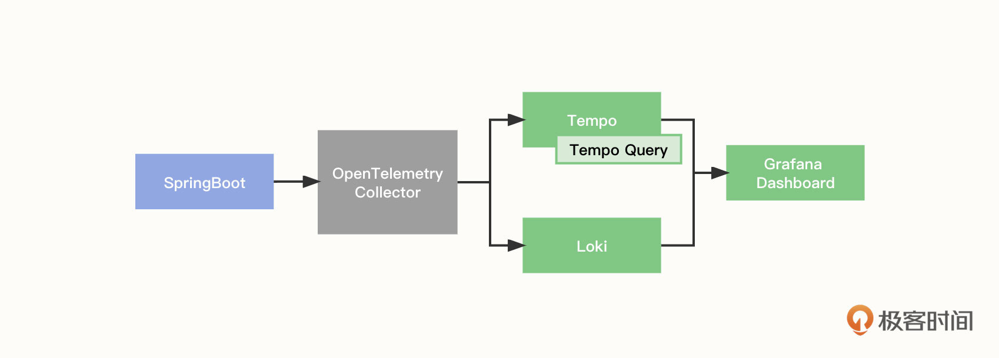
执行流程主要包括以下 4 步。
“ Grafana Tempo + Loki” 这个组合能够让我们直观地看到日志链路情况，但 Loki 的特性也决定了它并不能高效分析和处理大型生产系统的日志。日志链路只是可观测的一部分，仅仅通过日志链路查询并不能解决大部分问题，特别是在微服务云原生架构时代，多种多样的问题需要我们结合各方面进行分析。举个例子，用户访问卡顿不一定是程序问题，也有可能是当前系统的网络、CPU 等综合因素导致的。所以，这种方案也有其局限性。
如果对具体的实现方式有兴趣，可以参考这里的样例。
我们要聊的最后一种方案是观测云，它是一款专门为 DevOps 团队打造的可观测平台。
观测云允许包括开发、测试、运维在内的所有团队成员在一套统一的可观测数据体系下客观分析与定位故障，便于高效地协作。观测云能够采集指标、链路、日志以及所有的可观测数据，并将它们进行关联和整合分析，实现系统完整的可观测性。（你可以免费注册一个账号，在后面的实战课里跟我一起实战演练。）
观测云的数据采集 Agent 是 DataKit ，它能够支持主机和容器的环境。
由于 DataKit 是接收 OTLP 协议的，所以我们可以把 OpenTelemetry Collector 的 Exporter 设置为 OTLP（指向 DataKit），也可以直接将数据打给 DataKit。因此这里有两种方案。
方案一：
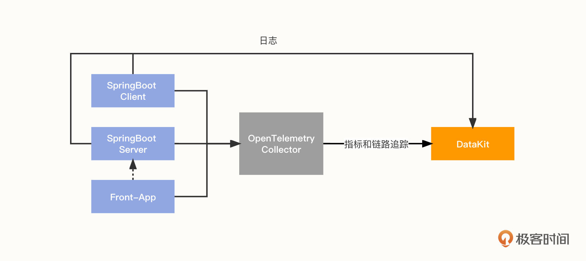
方案二：
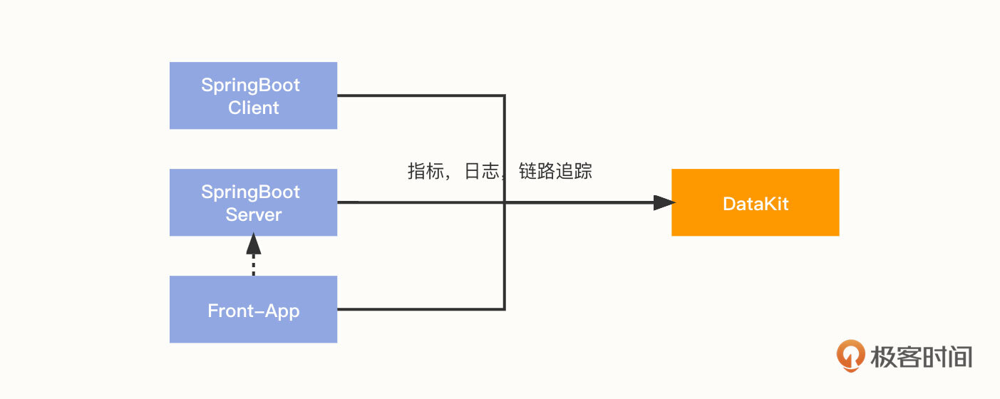
说明一下。第一种方案：
如果对具体的实现方式有兴趣，可以参考这里的样例。
第二种方案本质上是直接使用观测云的 DataKit 采集数据，这部分内容在接下来的第 10 讲会有更详细的介绍。
好了，这节课就先讲到这里。这节课，我们介绍了目前市场上最热门的 OpenTelemetry。
OpenTelemetry 是发展而来的产物，在它之前，已经出现过 OpenTracing 和 OpenCensus 两套标准，而 OpenTelemetry 对两者进行了统一，它是一整套的规范和工具，能帮助用户建立无厂商锁定的可观测性。
但是需要注意的是，OpenTelemetry 本身不提供后端。这节课，我为你介绍了 3 种不同的后端对接方式，分别是开源工具组合、Grafana 以及观测云，希望能帮助你进一步了解OpenTelemetry 的使用方法。
在下一讲，我们会讨论一个你很可能感兴趣的话题：我们应该自己搭建可观测性（比如使用 OpenTelemetry 以及一些开源或商业后端的组合），还是应该直接购买商业产品呢？你也可以先思考一下这个问题。
在这节课的最后，留给你一道思考题。
你有没有使用 OpenTelemetry 建立过对系统和应用的可观测性？如果有，可以分享一下你的使用心得。你觉得 OpenTelemetry 带来了哪些便利，又遇到过什么问题？
欢迎你在留言区和我交流讨论，我们下节课见！
你好，我是翁一磊。
上节课，我们介绍了现在非常热门的可观测性标准和规范 OpenTelemetry，你可以通过 OpenTelemetry 来构建针对你的系统和应用的可观测性。然而除了 OpenTelemetry，也有很多其他的开源工具、各种商业软件和产品。所以，在你撸起袖子准备开始干活之前，我们需要先讨论一下下面这个问题：建立可观测性，是应该自己搭建，还是直接购买商业产品呢？
首先我得承认，我自己就是一个可观测性软件供应商的职员。这样一来，你可能会觉得我一定会推荐购买商业产品。不过，公正性这点你可以放心，不管是哪一种方式，我都会从成本和收益的角度来给你介绍。最后的选择权，毕竟还是在你手上的。
当我们考虑自建还是采购可观测平台的时候，你的第一反应可能是觉得自建更划算，因为开源软件都是免费的，而商业软件要满足企业的需求，基本上都是付费的，而且是一笔不小的投资。这是一个很明显的误区。实际上，我们应该考虑的是整体的拥有总成本（Total Cost of Ownership），也就是 TCO。
TCO 可以定义为一个实体（比如说一个企业）在适当条件下和时间范围内，使用和维护商品或服务所发生的所有费用。这个费用不仅仅是购买商品或服务的费用，还包括了下面很多方面。
有成本，我们必然希望它伴随着收益。建立可观测性的回报，主要是在系统可靠性的提升上。可观测性可以为最终用户带来更好的体验和服务，满足业务的需求，甚至是驱动业务的发展。
同时，就像我在前面介绍的，在云原生的时代，随着系统复杂性的大大提高，一个完全不会出问题的系统是不存在的，那在有问题或者故障的时候，能够快速地找到问题的根本原因，缩短故障平均恢复时间（MTTR）就变得非常重要了。而这些，都是建立可观测性的价值收益。
接下来我们就来看一看，自建和购买商业产品分别存在哪些成本和收益。
这里的自建，指的不是从零到一开始自研一整套可观测平台（这种方式的时间、人力等成本相对非常高），而是基于开源的产品进行构建和二次开发，这应该也是更多企业能够接受和采取的方式。
我在第 3 讲中介绍过，可观测性不仅仅是监控，所以自建可观测平台需要考虑监控、日志以及链路追踪。同时，除了计算存储的资源，还需要根据数据量的规模，考虑消息中间件、缓存、数据库等多种组件所需要的资源。
例如，这里是一个日志分析平台 ELK 的典型架构（ELK 是三个开源项目的首字母缩写，分别是：Elasticsearch、Logstash 和 Kibana）：
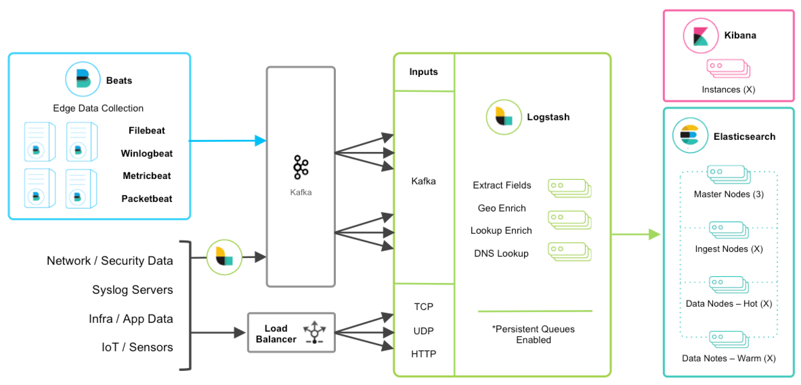
如果你想通过开源软件自建可观测性，可能需要下面这些组件。
这时候，就需要考虑像资源、人力还有一些隐性成本了。
资源成本
人力的成本
隐性的成本
通常来说，基于开源软件自建可观测平台，不需要等待比较长的采购周期。完成选型之后，可以快速开始构建。在互联网快速发展的今天，这是不小的优势。有技术能力的企业可以快速上手、构建原型，并通过不断打磨逐渐完善平台。
而且，比较成熟的开源软件往往有强大的技术社区做支撑。有来自世界各地成百上千的程序员共同维护一套软件，可以保持活力，让软件不断得到更新，既有问题较快得到修复。
另一方面，自己构建软件可以建立企业内部的专业知识。每个企业都会有自己的需求，继而会需要将这些需求转化成软件的功能。自建这种方式让企业内部的利益相关者的沟通、协调更加顺畅，能更好地为业务需求服务。
企业在采购第三方的产品和服务时，一般会有下面这些考虑。
这些都是购买商业软件需要考虑的成本因素。购买商业产品本身的流程一般比较漫长。经过测试、招投标等一系列过程之后，如果产品满足不了我们的使用需求，或是因为各种原因需要推倒重来，那整个过程消耗的财务、时间以及人力成本会是巨大的。
另一方面，很多商业软件都是按照许可证的方式来收费的。如果你的公司处在一个快速成长的阶段，你就需要考虑公司在发展壮大之后，继续使用商业软件的额外开销了。
如果你购买和使用的是 SaaS 软件，可以减少自建平台所花费的计算、存储等各方面资源的投资、以及维护的费用。即使购买的平台需要安装部署，一般也都会由厂商来负责，完成初始化配置之后，就可以开始使用了。更重要的是，原本需要做开源软件二次开发的工程师就可以把时间精力放在业务保障上，他们不再需要彻底研究和掌握开源软件的开发与维护。
而从另一方面来说，选购合适的商业产品，也是把专业的事情交给专业的人来做。你可能获得一个拥有专业知识的合作伙伴，他们在可观测领域有着自己的积累，能够为你提供专业的服务，解决各种问题，如果换做自己来研究，可能需要花费数年才能达到这个程度。
好了，这节课就讲到这里。
这节课，我们从成本和收益的角度，分析了自建和购买这两种方式。自建考虑的更多是资源成本和时间成本（转化为人员的成本），购买考虑的更多的是购买的费用。然而，这两种方式的隐性成本往往才是最容易被忽略的地方。
换个角度讲，自建还是购买可观测平台其实并不是一个非黑即白的问题。即使购买了一个商业软件，也不一定意味着你的企业就完全不需要可观测性团队了。实际上，可观测性团队对于满足企业业务的可观测性需求是必不可少的。
下节课，我们会介绍可观测对于 DevOps、系统可靠性（SRE）的帮助，了解为了高效实施可观测性，团队应该如何展开合作。开发也需要为可观测性负责，与运维团队一起保障服务的质量水平。
在这节课的最后，留给你一道思考题。
如果你的公司需要构建可观测平台，你们会选择哪种方式？你是如何考虑的？如果已经搭建了可观测平台，效果如何，你有什么样的心得和体会？
欢迎你在留言区和我交流讨论，我们下节课见！
你好，我是翁一磊。
通过前面几节课的学习，相信你对可观测性已经有了初步的了解。从这一讲开始，我们进入实战篇。作为这个模块的第一篇文章，我们会重点讨论可观测与云原生、DevOps 和 SRE 之间的关系，然后聊聊如果想要建立和实施系统的可观测性，开发、测试和运维团队应该从哪些方面着手。
云原生这个词相信你已经看到、听到过很多次了，对于这个词，你一定多少有一些自己的理解。云原生架构和技术是一种方法，它用于设计、构建和管理用云计算模型搭建的工作负载。
让我们来看一下云原生计算基金会提供的标准定义：
云原生技术使组织能够在公有云、私有云和混合云等现代动态环境中构建和运行可扩展的应用程序。容器、服务网格、微服务、不可变基础设施和声明式 API 就是这种方法的例证。这些技术支持具有弹性、可管理和可观测的松散耦合系统。结合强大的自动化功能，它们使工程师能够以最少的工作量频繁且可预测地进行高影响力的更改。
所以说，云原生是注重速度和敏捷性的。
在这一背景之下，不难想象，在未来，更多的应用程序会运行在云上，会使用容器技术和微服务。业务系统正在逐渐演变为提高业务速度、促进业务增长的战略转型武器。我们必须快速将新想法和新功能推向市场。
与此同时，业务系统也变得越来越复杂，用户的要求也越来越高：他们期望快速的响应，创新的功能以及零宕机时间。性能问题、反复出现的错误和缓慢的行动是用户无法容忍的，他们很可能会转向友商。这也意味着，应用软件的开发和运维方式需要进行转变，这就迎来了 DevOps 的飞速发展。
DevOps 实际上就是 Dev 和 Ops 的组合。Dev 指的是开发，Ops 指的是运维。DevOps 强调的是开发和运维的协作，因为在应用开发和上线的流程中，开发和运维是最重要的两个角色。
应用软件开发最重要目的是将新功能交付给最终用户使用。这些产品往往是从一个想法开始的，然后产品经理开始规划产品的功能，编写需求说明书，接着经过开发、测试、打包以及部署环节后，产品最终上线。
但并不是说应用上线之后就万事大吉了。用户的使用体验如何，有没有 Bug，应用能不能承载大量的用户负载，这些都是需要考虑和持续追踪的问题。另一方面，随着用户的使用和业务的发展，应用软件需要不断地优化性能，并增加一些新的功能。
如果沿用传统模式来实现这个过程，开发和运维会各司其职，甚至会产生一些对立。但是到了云原生的快速发展时代，快速发布和上线应用的需求会让这种模式遇到一些挑战。下面这些方面都会影响到上线的速度。
在云原生时代，开发和运维本质上有着共同的目标，也就是更快速地为最终用户交付高质量的应用。DevOps 就是为了移除实现这个目标的路上的阻碍而诞生的。需要指出的是，DevOps 并不是指使用特定的工具，而是一个文化、最佳实践和工具的集合，这其中也包括了你可能已经很熟悉的持续集成（Continuous Integration，即 CI）和持续发布（Continuous Delivery，即 CD）。
从技术层面讲，DevOps 是实现从代码、构建、测试到部署等的全流程自动化流水线，从软件开发全生命周期的角度出发，它致力于解决前面所说的那些影响软件发布和上线的因素，优化研发流程、提高研发效率和产品质量，从而最终提升用户使用产品的满意度，帮助业务发展。
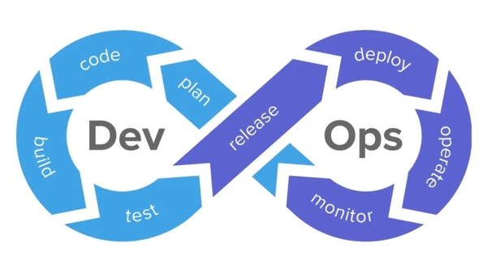
另外一个常见的概念是SRE，也就是 System Reliability Engineering，也可以指 Site Reliability Engineering，是类似的含义。如果要做个对比的话，DevOps 在一个较高的维度（High level）定义了要实现自动化、流线型的应用发布流程应该去做什么，而 SRE 则更加关注具体如何实施和实现 DevOps 的规则和流程。
SRE 中的系统（System）实际上是指运行应用程序时所有相关的组件，包括服务器、网络、数据库等等。而可靠性（Reliability）是指应用能够为最终用户提供高质量的服务。可靠性如果丢失（例如用户无法访问，或者无法使用相关的功能），会直接带来收益上的损失。而要相对准确地衡量可靠性状态，则需要定义 SLO（Service Level Objective），也就是服务水平目标，通过定义出需要关联的重要指标 SLI（Service Level Indicator），明确和追踪 SLO 的情况。关于SLO ，在后面的第 8 讲我们还会详细介绍。
而为了实现 SRE，一个很重要的实践就是需要提升整体项目的工程化水平，减少传统运维的行为，尤其是那些手工的、重复的、为了临时解决一个问题而进行的工作（在谷歌 SRE 书籍里面，这些称为 Toil，可以翻译为琐事，或者直接称为挫事）。而让团队中所有的成员开始有效地使用工具，同时减少人为干预，提升自动化，是一个很好的开始。
如果你想进一步学习和了解 SRE，极客时间里也有很好的相关课程。
实施 SRE 工程，守护系统的可靠性是一个⻓期的工作，需要开发、测试、运维以及 SRE 整个团队的努力。而可观测性平台天生就是为 SRE 工程服务的，它致力于实现 SLO 目标。建立可观测性不仅仅是运维团队的事情，更是整个开发、测试以及 SRE 团队的事情，这是全团队的工作。为什么这么说呢，下面我们分开来看。
从数据采集的插桩（也就是常说的埋点）开始，开发团队就必须为可观测性负责，因为整个产品、服务和组件都是这个系统的开发人员构建的，没有人比开发本身更了解这个系统，更能知道系统在运行状态下该暴露哪些指标、日志和链路追踪等遥测数据。
虽然可观测性平台的 Agent 做了很多自动化的工作，但仍然需要开发人员将属于自己组件特性的遥测数据有效地暴露出来。下一节，我们会更详细地介绍可观测性驱动的开发。
运维团队是很多企业中的基础设施团队，也是 SRE 工程中重要的一环。在建立可观测性时，更需要注重下面这几个领域的工作。
此外，测试团队也需要加入到可观测性的建立当中来，测试团队要做的更多的是对产品和功能的理解，他们需要通过可观测性及时发现每一次新功能和新版本发布的问题，并及时反馈给开发（例如代码质量问题或产品 Bug）或运维团队（例如有关基础设施的问题）。
而另一方面，测试团队会通过对系统进行压测、引入混沌工程等操作进一步验证系统的可靠性，提升系统质量。这时候，测试人员更加需要借助可观测平台了解系统的基线状态，搞清现场执行情况与预期存在偏差的原因，甚至发现之前可能根本就无法预料到的问题，从而对系统进行优化和完善。
在有的企业，会设立专门的 SRE 团队，而在有些企业，这并不是一个固定的岗位，而是多个岗位之间的协同。从建立可观测的角度来说，SRE 团队需要能够完成下面这些工作。
好了，这节课就讲到这里。这一讲，我们介绍了云原生时代的系统特性，看到了 DevOps 和 SRE 在云原生时代的目标。正是在这样的背景下，人们对可观测性解决方案的要求越来越迫切。反过来，可观测性也增强了团队的问题排查和解决能力。
成熟的 DevOps 和 SRE 团队，从来不是被动地获取已经导致宕机的警报，而是会借用可观测工具主动和持续地观测数据，寻找导致用户体验受损的任何可能性，深入了解相关的原因，在真正影响最终用户体验之前就把问题解决掉。
当然，我们不能忽略的是，系统的可观测性也需要持续优化和改进。针对整个系统的可观测，包括数据收集和分析、监测和告警构建、标签体系建立等等都需要时间。在下一节中，我将从开发的角度更加深入地介绍可观测性驱动的软件开发。
在这节课的最后，留给你一道思考题。
你的工作职责是开发、测试、运维还是 SRE？在你日常的工作过程中，是如何与其他团队合作来共同维护系统的可靠性的？
欢迎你在留言区和我交流讨论，我们下节课见！
你好，我是翁一磊。
在上一讲，我们说建立可观测性不仅仅是运维同学的责任，开发同学也应该积极地参与进来，因为代码是开发写出来的，他们是最了解系统和应用的。这节课，我们就更近距离看看可观测性驱动的软件开发，看看它如何更加有效地帮助我们分析生产环境问题，保障生产环境的服务可靠性。
如今，在软件投入生产之前，需要先进行一系列的测试，这已经是非常标准的流程了。而你可能也早就听过它的英文首字母缩写TDD，测试驱动的软件开发（Test Driven Development）。
TDD指的是一个软件开发过程，它依赖于在软件完全开发之前将软件需求转换为测试用例，然后通过对所有测试用例的重复测试，来跟踪所有软件开发。
简单地说，测试驱动的软件开发包括下面这些流程：
更多详细的介绍，可以访问这个链接。
测试驱动的软件开发，可以在许多潜在问题投入生产之前，通过在测试环境中的一系列验证，发现和捕获程序上的问题。
然而，如果你管理或维护过生产环境，你应该很清楚，生产环境是实际用户访问和使用产品的环境，它很多时候和测试环境是不一致的。在生产环境中很容易遇到测试环境中没有碰到过的问题，程序的代码也总是会存在一些测试没有覆盖到的地方。所以我们需要在生产环境中快速定位和解决问题的能力。
生产环境不是一成不变的，它充满了各种可能性，因为这是真正的最终用户访问和使用软件的环境。工程师们应该有能力和自信来应对任何异常，原因就像我们上节课说的，可观测性不仅仅是基础设施工程师或者运维工程师的专属领域，更重要的是，软件工程师也必须采用可观测性并将其运用到自己的开发实践中，打破自己对于变更生产环境的恐惧感。
换个角度来看，当我们升级或更新了生产环境之后，如果有问题，也希望能够及时发现，及时排错，而不是等过了很久之后才发现问题。因为这时候开发往往已经进入到后续的新功能迭代阶段，再来处理之前迭代周期的功能开发，常常是事倍功半的。
所以说，我们需要针对生产环境建立可观测性。当代码发布在生产环境之后，开发同学也应该去看看软件程序在生产环境中实际的运行情况，检查功能是不是都符合预期，最终用户在使用时有没有遇到异常或者错误，有没有出现测试环境中没有碰到过的问题。如果开发对生产环境足够关注，将会在真正影响用户体验之前发现和解决很多问题。
针对生产环境建立可观测性，具体要怎么做呢？
可观测性驱动的软件开发（Observability Driven Development，缩写为 ODD）鼓励开发团队在整个开发过程中考虑应用程序的可靠性和软件质量，利用工具或是开发人员的插桩来观测系统的状态和行为。可观测性并不是要直接调试代码逻辑，而是在每次新功能或者版本发布到生产环境后，检验生产环境的状态，帮助发现并定位潜在问题，找出系统中需要调试的代码所处的位置。
这里有一些最佳实践和准则可以遵守，包括建立文化、有意义的代码插桩，还有选择合适的可观测工具。
开发不应该只是关注于产品功能的实现，也需要为系统整体的可靠性负责。在这个认知的前提下，我们也需要建立可观测性驱动的开发文化，鼓励开发更好地参与到可观测性的建立上来。
但是，只有文化愿景是不够的，我们在代码设计阶段，就必须考虑和确定系统在生产环境运行时需要达到的目标。比如说，定义好服务水平目标 SLO，为了提供预期的服务质量，你需要什么程度的可观测性？你的用户关心什么？他们会注意到什么？试图找出可能出错的地方，以及提前发现错误的方法。
在明确了目标之后，我们应该将代码插桩视为重要的责任，并视为将其交付生产的要求。代码插桩主要包括下面几种类型。
良好的插桩可以帮助你的组织更广泛地传播可观测性文化，减轻团队的负担，因为如果插桩提供了足够的上下文，运维或技术支持团队就能够解决更多问题，不需要频繁地寻呼开发了。
就像我们在第 5 讲中介绍的，构建可观测性，并不是一定要完全依靠自己来搭建和研发，很多时候，选择合适的工具可以帮助你更有效率地达到目标。
有许多工具都自称是“可观测性工具”，但事实并非如此。这样一来，选择正确的工具就很重要了。一个好的可观测性工具需要具有下面几种能力。
好了，这节课就上到这里。
在这一讲，我们重点讲述了测试和可观测性驱动的软件开发。使用测试进行驱动，可以依靠各种测试来检验代码的质量，但是生产环境和测试环境完全不同，你也无法完全预料最终用户使用你的产品和服务的方式，不能确定他们会遇到怎么样的问题。
而可观测性驱动的软件开发，能够帮助你更加清晰地了解在生产环境中，你的用户如何使用你的产品，遇到了哪些问题，包括那些你之前可能无法预料或者发现的问题。
可能你以前无法理解生产环境的实际运行情况，导向了一种不敢触碰生产环境的心态。而通过可观测性，开发工程师可以观测新功能发布到生产环境时的各种状态，将生产环境作为一个可观测、可交互的环境，这样就可以获取到最终用户的真实体验，用它来改进开发软件了。
在这节课的最后，留给你一道思考题。
你在工作中，是如何维护生产环境中系统和软件的可靠性的？有没有遇到在测试环境中无法复现的问题，又是通过什么方法来解决的？
欢迎你在留言区和我交流讨论，我们下节课见！
你好，我是翁一磊。
在前面两节课，相信你已经意识到，建立可观测性需要开发、测试、运维等团队共同的努力，而大家一起努力的目标就是维护好系统可靠性。
这时候你可能会有一个疑问，系统的可靠性究竟应该如何衡量呢？在这一讲，我就来为你详细介绍一下服务水平目标，也就是 Service Level Objective（SLO）。通过设定具体且可衡量的可靠性目标，能够帮助企业在产品开发迭代和稳定性保障工作之间取得适当的平衡，带来积极的最终用户体验。
说到 SLO，相信你一定会联想到另一个英文缩写 SLA。SLA 即 Service Level Agreement，也就是服务等级协议，它指的是系统服务提供者（Provider）对客户（Customer）的一个服务承诺。
在移动互联网时代，我们对基于互联网应用的需求日益旺盛（电商、社交网络、游戏、云服务商、SaaS…），任何一个互联网业务应用（也就是这个时代的系统服务提供者）出现故障，都会对用户乃至于整个社会产生巨大的影响，因此服务提供者需要明确能够提供的服务保障。
而 SLO 就是 SLA 的具体目标管理办法，它由一系列相关的指标 SLI （Service Level Indicator）来进行衡量。虽然我们中文里也常提到指标，但 SLI 和我们之前讨论的 Metric（指标）有所不同：不是所有的 Metric 都是 SLI，SLI 应该更靠近使用产品和服务的最终用户，用于衡量提供给最终用户的服务水平，具体包括可用性、响应时间等等。
那具体什么是 SLI 呢？
举个例子来说，如果你负责的是一个电子书刊或杂志的应用程序，最终用户进行“订阅”的这个操作对业务收入来说就至关重要。那么，针对这个订阅服务的 API 可用性，就应该作为一个 SLI，因为它关系到用户能否正常完成订阅的操作。如果一次请求返回的 HTTP 状态代码为 200，则可以视为一次成功的请求；但是如果不是 200，比如出现 5xx 的错误，我们就认为这次请求是失败的。在这节课的后半部分我们还会进一步介绍如何选择合适的 SLI。
有了 SLI，接下来，我们就可以检测在每个检测周期内各个 SLI 是否满足要求，从而计算整体的 SLO 情况了。SLO 具体来说，指的是在一个时间窗口内，各项 SLI 预期的累计成功百分比。这个时间窗口可以根据业务的需要来定义，一般来说为 30 天。
举个例子，过去 30 天（总计 43200 分钟），如果发生异常的时间为 2 分钟，则 SLO 的状态为 （43200 - 2）/ 43200 * 100% = 99.995%。这里有一个对应的概念叫做错误预算（Error Budget），它指的是初始状态时 100% 可靠性和 SLO 目标之间的差额。
每当和 SLO 相关联的 SLI 没有满足要求，我们就要扣除一部分错误预算，那剩余的错误预算就是当前 SLO 状态和 SLO 目标之间的差额；等到错误预算不足时，这个周期内的 SLO 就达不到目标了。
在这个例子中，如果 SLO 的目标是 99.995%（意味着 30 天内总共只有 2 分钟 10 秒的错误预算），那么扣除 2 分钟之后，剩余的错误预算只有 10 秒了。
我再给你举一个在观测云上具体的例子：如下图所示，假设 SLI 检测周期为 5 分钟，而这一次监测发现了一些异常事件（也就是有 SLI 不达标），根据叠加的结果，异常事件覆盖时间为 3 分钟，需要扣除 SLO 的错误预算额度 3 分钟。那这个时候，如果仍然 SLO 以 99.995% 为目标，这个月的错误预算就已经用完了（总共有 2 分钟 10 秒），也就是说这个月的 SLO 不达标了。
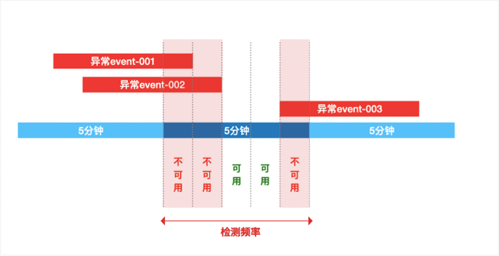
就像前面说的，SLO 最重要的是衡量最终用户使用产品和服务的质量。除此之外，SLO 的状态还会影响到企业内部人员（包括开发和运维）对产品和服务采取的措施。因此， SLO 对于最终用户、开发和运维都很重要。
无论是什么样的产品，最终用户都对他们获得的服务质量抱有期望。他们希望可以在任何给定时间访问应用程序，希望应用能够快速加载并返回正确的数据。虽然我们可以通过工单或者客服电话来听取最终用户的反馈，对产品进行改进，但这些渠道非常有局限。而且即使我们能够解决所有工单和问题，也不意味着最终用户一定满意，不代表达到了最终用户期望的服务水平。
实际上，始终保持 100% 的可靠性是不可能的。SLO 可以帮助你在产品创新（这将帮助你为最终用户提供更大价值，但有一定破坏稳定性的风险）和可靠性（这将使最终用户在使用产品和服务的时候感到满意）之间找到正确的平衡点。你的错误预算决定了，在你的服务质量下降到真正影响最终用户正常使用之前，开发工作能承受的不可靠性的程度。
为了让整个企业的主要利益相关者采用 SLO，需要他们就实际可实现的可靠性目标达成一致，尤其是考虑到业务的优先级和他们希望开展的项目。
过去，开发人员和运维工程师之间的分歧源于他们对立的目标和职责：开发人员旨在为产品和服务添加更多功能，而运维工程师则负责维护这些服务的稳定性。SLO 不仅可以推进业务成果，还可以促进文化转变，让开发和运维团队对应用程序的可靠性形成一种共同的责任感。
有了 SLO 和错误预算之后，团队就能够客观地决定优先考虑哪些项目或计划了。只要有剩余的错误预算，开发人员就可以发布新功能以此提高产品的整体质量，而运维工程师则可以更专注于长期可靠性项目，例如数据库维护和流程自动化等。
但是，当错误预算即将耗尽时，开发人员需要放慢或冻结功能工作，与运维团队密切合作，在违反任何 SLO 之前重新稳定系统。简而言之，错误预算是一种可量化的方法，它可以调整开发人员和运维工程师的工作和目标。
现在，我们已经定义了一些和 SLO 相关的概念，那么具体应该关联哪些 SLI 呢？这需要我们先深入了解你的最终用户是怎样使用你的产品的，这是第一步，也是最重要的一步。
你需要了解你的最终用户如何与你的应用程序交互，他们会希望通过应用来达到什么目的，一般的使用习惯是怎样的，他们使用的这些功能后面对应的服务和基础设施又有哪些。
以电商平台为例，该如何选取 SLI 从而设置 SLO 呢？你需要首先弄清楚，你的最终用户如何使用网站或者 App。通常来说，最终用户需要能够登录、搜索商品、查看单个商品的详细信息、将商品添加到购物车，最后进行支付。这就是你的应用的关键用户旅程，这对于选择 SLI 很重要，因为这是会对最终用户的体验造成影响的。
随着你的基础架构越来越复杂，为每个数据库、消息队列和负载均衡器设置外部 SLO 变得越来越麻烦。相反，我建议你将你的系统组件组织成几个主要类别（例如，响应/请求、存储、数据管道），并在每个类别中指定 SLI。在选取 SLI 的时候，请记住：“所有 SLI 都是指标，但并非所有指标都是好的 SLI。” 这意味着，虽然你可能要跟踪成百上千个指标，但你应该关注最重要的指标：最能捕捉用户体验的指标。
你可以使用下表（来自 Google 的 SRE 书籍）作为参考。
响应或者请求类型的服务。
数据存储类型的服务。
数据管道（Pipeline，将输入的数据进行转换并进行输出，例如从多种来源收集日志并生成报告）。
让我再给你举一些例子。想象一下你的最终用户，也就是你的电商平台的购物者，卡在了结账页面上，他们要等待缓慢的支付端点返回响应。他们等待的时间越长，就越有可能放弃并且转向其他平台，这会给业务带来损失。所以从这个角度来说，页面上每一秒延迟的增加都与收入的显著减少相关。因此从这个例子中，我们可以看到响应延迟是在线电商平台跟踪的一个特别重要的 SLI，它能够确保他们的客户可以快速完成关键业务交易。
我们可以再看一下另一个层面的指标，基础设施，我们拿 CPU 利用率举例。我们说这不是一个很好的 SLI 候选，因为即使服务器的 CPU 利用率比较高了，但对于最终用户来说，可能仍然可以在页面上完成商品浏览、对比、加入购物车以及结账等操作，用户体验没有受到影响。
当然，并不是说基础设施就完全不用去关注了，我们还是需要设置监控，但并不是作为 SLI 来与 SLO 直接关联。这里的要点是，无论一个指标对你的内部团队有多重要，如果它的价值不直接影响用户满意度，那么它作为 SLI 就没有用处，反而可能带来告警的风暴，淹没了更加重要的信息。
一旦确定了 SLI，你就需要为 SLI 设置目标值（或值范围），把它和 SLO 关联起来了。一般我们对 SLI 完整的定义是在过去多久的时间内，该指标需要满足的正常阈值范围。
例如，跟踪请求延迟可能是“在 30 天内，95% 的身份验证服务请求的延迟将小于 250 毫秒”。需要指出的是，这里的 95% 是 P95 的含义，即将响应耗时从小到大排列，顺序处于 95% 位置的值即为 P95 值。这里不选择平均数，是因为偶尔发生的极端值可能会极大地影响平均数，让平均数的统计失去了意义。
好了，这节课，我们探讨了如何选择正确的 SLI 并将其转换为定义明确的 SLO。通过使用 SLI 来衡量你们为用户提供的服务水平，并根据实际 SLO 和错误预算进行跟踪，你将能够更好地做出决策，提高功能速度和系统可靠性。
从另一个角度来说，设定多个 SLI 与相应的影响 SLO 的规则，相当于为这个系统可靠性工程定义了 OKR（Objective and Key Results，现在很多企业的目标管理方式），确保 SLO 的错误预算不会出现不足，这是整个团队的核心目标。
在下一讲，我会为你介绍如何使用可观测平台来进行 SLO 的跟踪和维护，并通过 SLO 的状态来决定下一步的行动计划。
在这节课的最后，留给你一道思考题。
如果你也参与了系统可靠性的维护，在这个过程中，你的应用软件是什么类型，属于什么行业？你是通过重点关注哪些指标来量化和保障系统可靠性的？
欢迎你在留言区和我交流讨论，我们下节课见！
你好，我是翁一磊。
上一讲，我们介绍了 SLO 的概念，以及如何选取 SLI 来和相关的 SLO 进行关联，最终实现 SLO 的可度量。
SLO 提供了一个框架，它围绕应用程序的性能和可靠性定义了明确的目标，最终帮助团队提供一致的客户体验，平衡功能开发与系统稳定性之间的矛盾，改善与内部和外部用户的沟通。
那当我们设定好 SLO 之后，又应该怎么持续跟踪，并根据 SLO 的状态来决定下一步的行动计划呢？这是我们这一讲的重点。
在上一讲我们提到了一个非常重要的概念，那就是错误预算，它是 100% 可靠性和 SLO 目标之间的差额。当我们设定好 SLO，并关联 SLI 进行持续跟踪之后，如果有SLI 未能满足要求，错误预算就需要扣除发生错误的时间。
上节课我们还举了一个例子，说 SLO 如果是 99.95%，那么在一个月的时间内，初始状态下就有 2 分钟 54 秒的错误预算。而如果发生了影响实际用户的报错或是延迟太高（具体取决于你如何设定 SLI），问题持续了 1 分钟，那这个月剩余的错误预算就只有 1 分钟 54 秒了。
接下来，我会通过在观测云平台中的一个具体的例子，让你更进一步熟悉和了解这些概念。你可以免费注册一个账号，跟我一起进行实际操作（观测云也提供了 Demo 演示空间，你可以点击左上角的工作空间名称，在弹出的对话框中点击“体验 Demo 空间”即可进入）。
在观测云中，你可以创建多种监控器，不仅仅只是基于阈值检测，还包括了日志形成指标、应用性能指标、用户访问指标、可用性监控数据等多种维度，它可以帮助你定义 SLI 并将其与 SLO 进行关联。
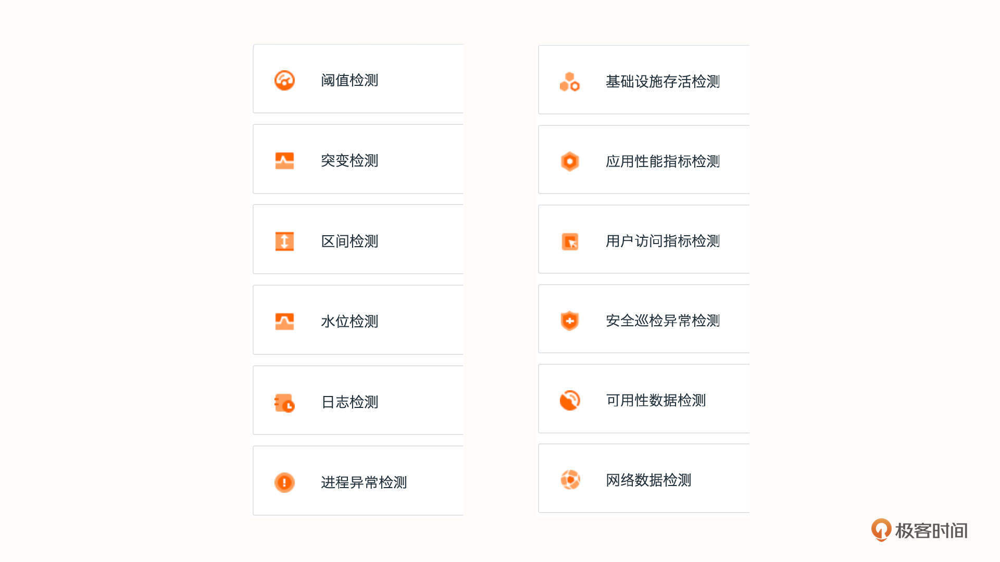
SLO 为你的 SLI 设置了精确的目标，这些目标是反映服务运行状况和性能的指标。例如，如果你想确保快速处理典型的用户请求，可以使用来自应用性能监测的 P95 延迟作为 SLI。然后，你可以将目标定义为：在任何日历月 99% 的时间里，所有用户请求的 P95 延迟（按每分钟计算）需要小于 250 毫秒。
在通常情况下，为了准确跟踪实际性能与设定目标的相对情况，你既需要监控实时性能（例如，每 1 分钟计算一次 P95 延迟，并将它与 250 毫秒阈值进行比较），还需要测量在更长的时间跨度内违反该阈值的频率，从而确保每个日历月都达到 99% 的目标。
观测云可以帮助你跟踪你的 SLI ，建立与 SLO 的关系，并将 SLO 的状态可视化地展现出来，所以，你可以立即看到在给定时间段内实际可靠性与目标的相对情况，也就是错误预算的情况（图中的剩余额度）。
再进一步讲，我们单击 SLO 会打开一个侧面板，这里会显示 SLO 的详细信息，例如它的状态、目标值和剩余的错误预算，清楚地展现在违反 SLO 之前你可以承受的不可靠性程度。这有助于你快速了解系统的当前情况，确认开发速度是否适合既定的性能和稳定性目标。观测云会根据你指定的 SLO 目标和时间窗口自动计算错误预算并提供告警，及时提醒 SLO 的状态。
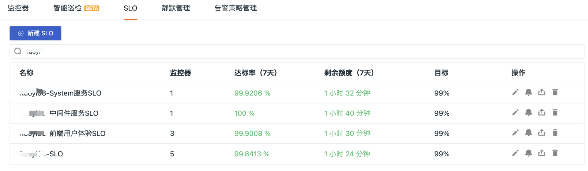
错误预算的状态会影响到我们后续的动作。错误预算将要耗尽时，我们要采取适当措施，用部分或全部工程时间专门来处理与可靠性相关的错误，或者停止功能的更新，直到该服务再次回到 SLO 目标中为止。
我们可以根据 来自 Google 的 SRE 书籍 中的建议，从以下 3 个维度来考虑。
这 3 个维度的不同情况，一共会产生 8 种不同的组合，对应 8 种行动计划：
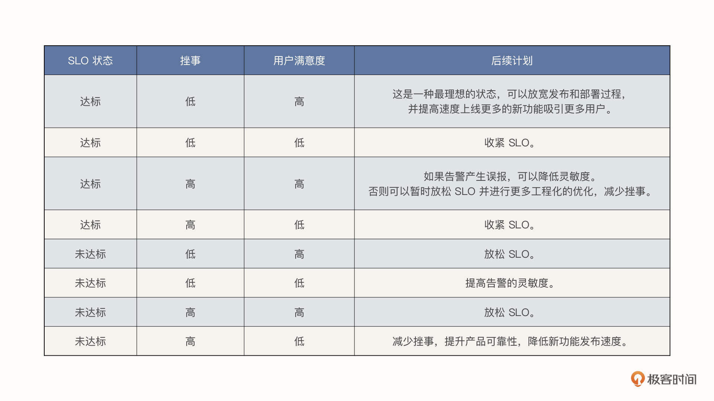
总体来说，如果服务在其 SLO 或更高的性能下运行，我们可以继续推行发布策略，甚至可以更激进一些，发布更多新功能。但是如果服务的 SLO 未达标，超出了错误预算的额度，那我们就需要停止所有的更新，投入更多资源来进行可靠性工作了。这个状态应该持续到服务返回其 SLO 之内为止。
在服务实际运行过程中，我们也会碰到各种情况。比如说，如果最终用户的体验受到了影响，但没有任何 SLI 捕获到问题，或者是未映射到面向用户的问题，这表明你的 SLI 覆盖面不够。但这其实也是一种正常的情况，因为随着你的系统和应用软件的更新，你的 SLI 和 SLO 也会发生变化，因为它们所代表的服务可能已经发生了变化。
所以，不要害怕一次次地检查和完善你的 SLO 和 SLI。这里，我也给你提供一些可以应用的最佳实践。
总体而言，系统的可靠性并不是我们的监控和日志来决定的，而是由我们产品的最终用户说了算。你编写的代码和设计的系统都是为你的用户服务的。毕竟，如果我们构建了一个没人使用的东西，那么我们最好把时间和精力花在其他事情上。
可靠性是所有系统最重要的要求，因为它是用户信任的基础。如果用户不信任系统，他们就不会使用它，很快我们的系统就会没有用户了。换句话说，即使产品和服务提供了更多的新功能，如果它们不可靠，也就不会被信任，就会无人关注。
作为工程师，我们需要在最符合用户利益的情况下来进行我们的选择。例如，某些算法的理论最优性只有在它能真实为我们的用户（以及我们的组织或企业）提供有意义的价值时才重要。
在这节课，我主要介绍了如何持续跟踪 SLO，以及如何根据错误预算来定义后续的行动计划。错误预算为你提供了有关服务决策的方法，无论是单个微服务还是整个面向客户的产品，它告诉我们，何时可以发布功能，应该关注什么，何时可以进行试验以及最大的风险因素是什么。我们可以在此基础上再接再厉，让整个团队、组织或整个公司把 SLO 和错误预算当做数据支撑，更准确地知道什么时候可以更加激进地发布新功能，而什么时候需要专注于可靠性工作。
从下节课开始，我们将迎来一系列的实战课程，请做好准备，跟着我一起操练吧！
在这节课的最后，留给你一道思考题。
在平时的工作中，你是怎么平衡新功能的开发与上线后的稳定性保障的？如果你对我们这两节有关 SLO 的话题有任何问题，也欢迎提出。
欢迎你在留言区和我交流讨论，我们下节课见！
你好，我是翁一磊。
在前面的课程里，我们学习了很多可观测性的理论知识。那基础打好了，接下来就要真刀真枪地建立系统开始实战了。
这节课，我会基于一个典型的Spring Cloud的应用，给你讲解如何从 0 到 1 来构建端到端的全链路可观测性，如何打通可观测性数据的联合。
我们这个实战项目采用的系统是若依系统，这是一套开源的后台管理系统，同时也是一个 Java EE 企业级快速开发平台，它由多个微服务组成，内置模块诸多，如：部门管理、角色用户、菜单及按钮授权、数据权限、系统参数、日志管理、通知公告等。如果需要项目的开源地址和演示地址，你可以点开链接查看。
若依系统的架构主要包括下面几类。
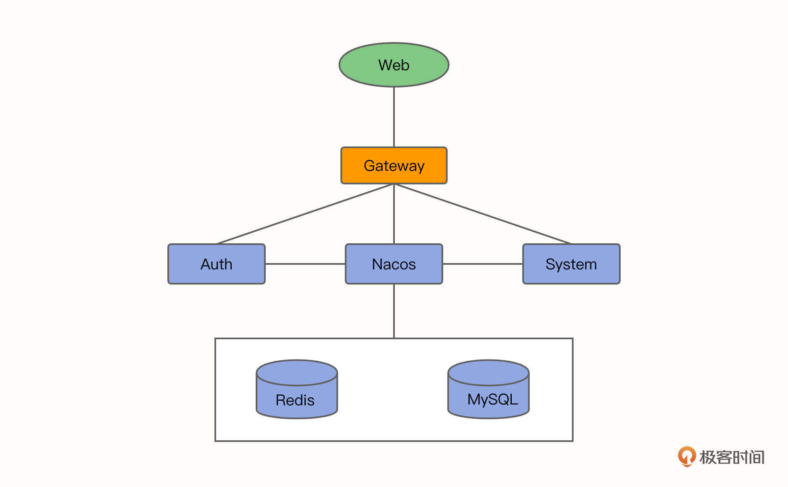
项目中涉及的技术栈如下表所示：
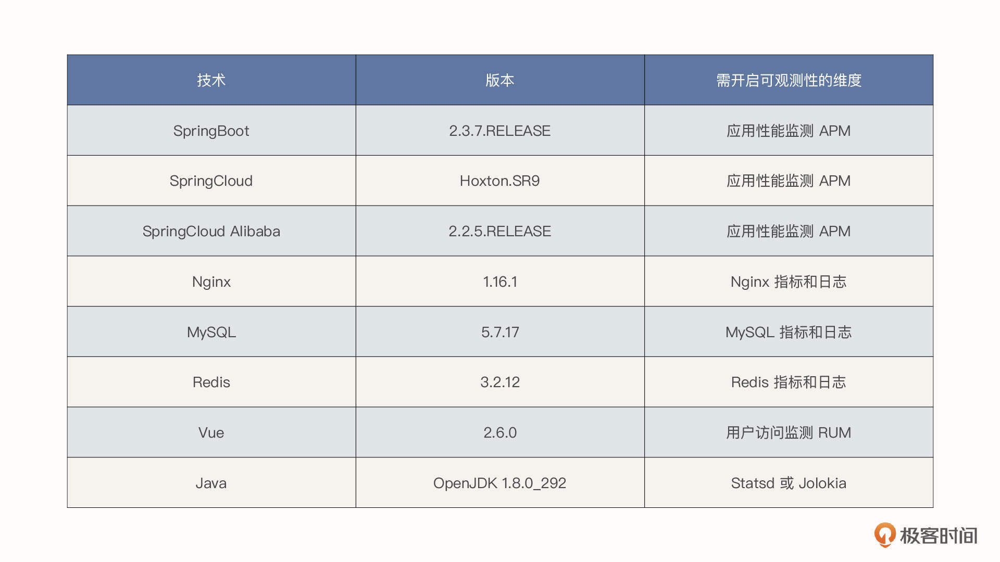
提醒一下，我们为了构建可观测性实战选择的是单机 Jar 包版应用，它可以将所有服务模块都部署在同一台服务器上，利用不同端口对服务进行访问。
接下来，我们就一起针对若依这个系统建立可观测性。市面上有不少的开源工具可供选择，但是从某种意义上来说，目前并没有一个开源工具能够完整地解决可观测性的问题，基本都需要把多个工具拼凑到一起来用。在遇到一些业务问题时，仍然需要访问不同的工具来分析问题，相关的日志、链路以及指标数据也没有很好地融合，这样的操作并不能有效减轻运维以及开发人员的分析调试成本和沟通成本。
而观测云是一款专门为 DevOps 团队打造的可观测平台，它可以让包括开发、测试、运维在内的所有团队在一套统一的可观测数据体系下客观分析与定位故障问题，便于高效地协作。因此在这个实战的课程中，我会通过观测云来具体介绍一下可观测性的建立过程和使用效果，将指标、链路、日志所有的可观测数据采集、关联以及整合分析，实现系统完整的可观测性。你可以免费注册一个账号，跟我一起实战演练。
DataKit 是观测云的数据采集器，它不仅支持将数据传输到观测云，也兼容其他的后端存储。针对若依系统，我们会采集 Nginx和MySQL 等技术栈相关的指标和日志、若依系统的服务日志、应用性能监测 APM以及用户访问监测 RUM，最终通过 DataKit 将这些数据有效地关联起来。我把需要采集的数据列了一张表格：
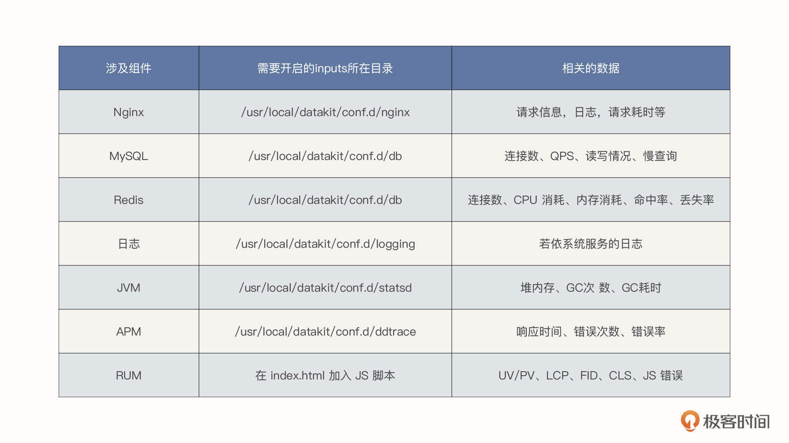
下面我们将针对各项技术栈一一进行介绍。
Nginx 相信你已经比较熟悉了。因为Nginx 的应用场景广泛，所以对大部分企业来说还是很重要的。如何保障 Nginx 的健康与稳定也是企业内部的运维人员非常关心的一件事。
Nginx 自身提供了不少数据源可以反馈自身的状态。比方说，Nginx 自带的性能指标模块 with-http_stub_status_module 就可以直接获取 Nginx 相关的数据（例如请求连接数、处理连接数等）。同时， Nginx 日志（包括 access.log 和 error.log）可以用来进行具体的请求层面的分析，像 PV 数量、UV 数量、请求错误统计等。性能指标与日志的结合就可以快速了解 Nginx 自身的很多状态。
但是，文本类的日志数据格式观看起来既不方便也不美观，更重要的是，这些数据格式不能实时反映 Nginx 相关请求数或服务器请求状态的变化趋势。我们可以通过采集 Nginx 的性能状态和日志，把数据放到同一平台同一界面展现出来，借此提高使用人员的工作效率。
Nginx 相关的数据展现效果如下（这是观测云内置的仪表盘，你也可以根据自己的需要，通过内置的各种视图部件进行自定义），这样可以将日志信息形成指标，同时也能展现客户端请求的数据。
另一方面，观测云中的仪表盘并不仅仅只是静态的视图，我们还可以进行相关的下钻跳转，从而从更多维度对数据进行分析。在这节课，我们主要介绍数据的接入。下一讲，我会进一步讲解接入之后，如何分析问题。
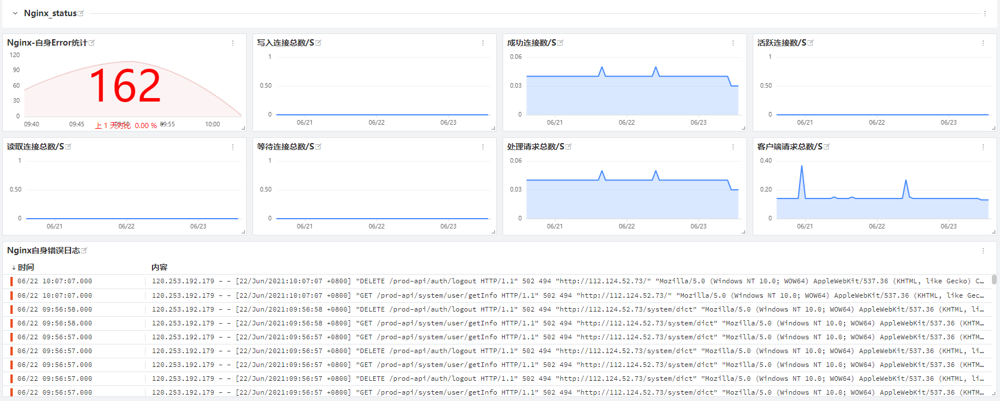
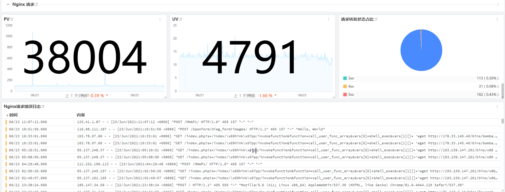
上图展现的是观测云中提供的内置视图模板。下面我们来解读一下具体的接入方式。
在 Nginx 的所在的主机中安装好 DataKit 之后，（或是通过 DaemonSet 部署来支持 Kubernetes 环境），需要进行几步简单的配置：
安装 Nginx 的 with-http_stub_status_module 模块；
在 Nginx.conf 中增添 nginx_status 的 location 转发；
\( cd /etc/nginx ## nginx 路径根据实际情况而定 \) vim nginx.conf
$ server{
listen 80;
server_name localhost;
##端口可自定义
location /nginx_status {
stub_status on;
allow 127.0.0.1;
deny all;
}
}
启用 DataKit 的 Nginx.conf，并修改 inputs：
\( cd /usr/local/datakit/conf.d/nginx/ \) cp nginx.conf.sample nginx.conf $ vim nginx.conf
#修改如下内容 [[inputs.nginx]]
url = http://localhost/nginx_status
[inputs.nginx.log]
files = ["/var/log/nginx/access.log","/var/log/nginx /error.log"]
#保存文件后重启 datakit
$ service datakit restart
再来看下MySQL。MySQL 监测场景主要展示了 MySQL 的基础信息、链接信息、存储空间信息、InnoDB 信息、性能信息、锁信息以及日志信息（包括 /var/log/mysql/*.log）。一般来说，需要为监测 MySQL 创建一个单独的账号，赋予该用户在本地或远程读取数据的权限。
MySQL的详细配置在这里就不多说了，它跟 Nginx 类似，只要修改 DataKit 的 MySQL inputs 就可以了。具体可以参考相关文档。
采集好数据后，可以在观测云上看到这样的仪表盘（类似 Nginx、MySQL 的仪表盘，也可以自定义修改）：
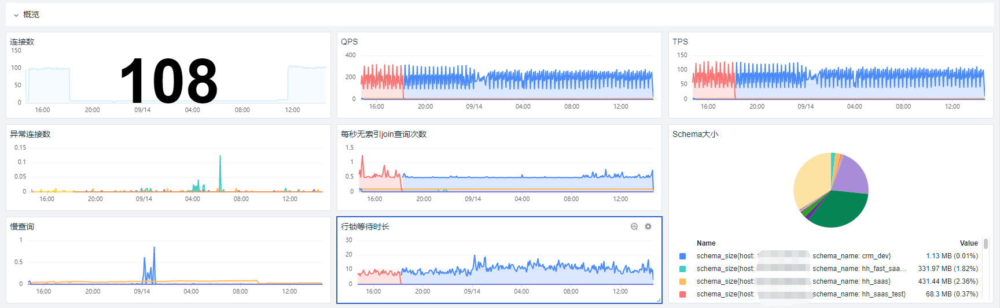
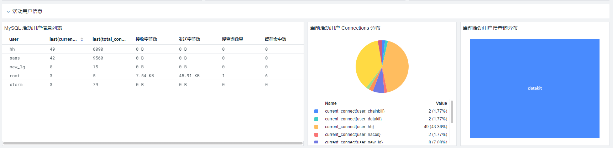
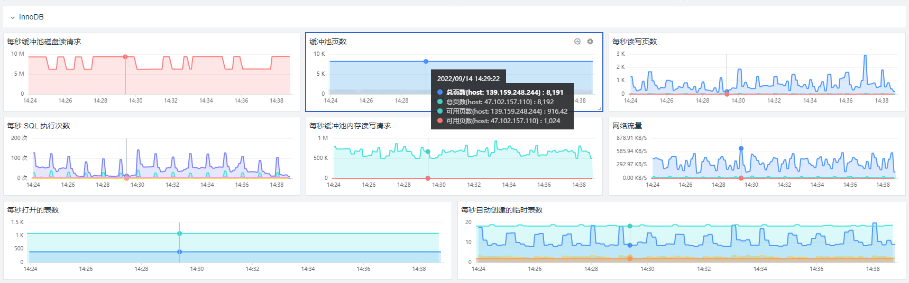
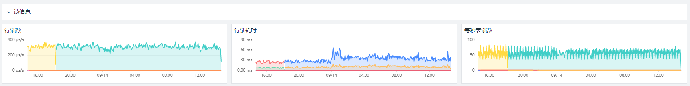
监视 Redis 可以帮助你在两个方面发现问题：Redis 本身的资源问题以及支持基础架构中其他地方出现的问题。我们可以从下面几个维度中对 Redis 进行监测：性能指标、内存指标、基本活动指标、持续性指标、以及错误指标。Redis 的详细配置可以参考相关文档。
采集数据之后，在观测云可以汇总出下面这样的仪表盘（类似 Nginx、Redis 仪表盘，也可以自定义修改）：
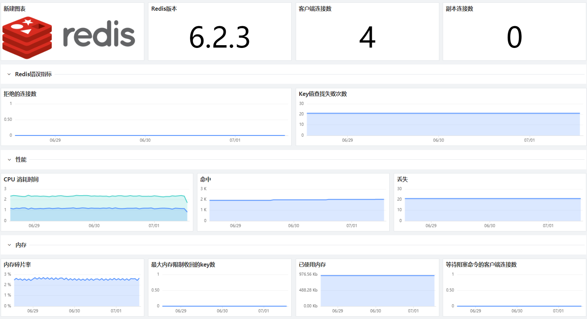
这里只要在 Datakit 中启用 JVM 的 inputs 即可，不需要进行修改。Java 应用启动的脚本，将在待会进行详细的介绍。
$ cd /usr/local/datakit/conf.d/statsd/
$ cp statsd.conf.sample ddtrace-jvm-statsd.conf
$ vim ddtrace-jvm-statsd.conf
# 默认不需要修改
数据采集完毕后，在观测云可以汇总出如下界面：
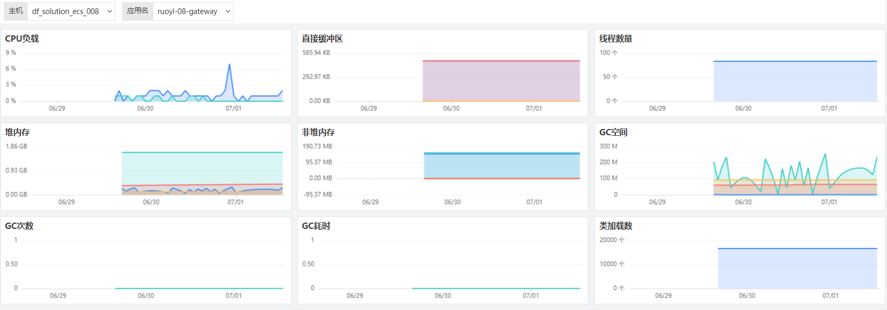
这一步采集的不仅仅是标准日志（ Nginx、MySQL、Redis 等），也包括业务日志，例如，若依系统就有 system 服务日志。
你可以通过下面这样方式来配置日志采集。
$ cd /usr/local/datakit/conf.d/log/
$ cp logging.conf.sample logging.conf
$ vim logging.conf
## 修改 log 路径为正确的应用日志的路径
## source 与 service 为必填字段，可以直接用应用名称，用以区分不同的日志名称
[inputs.logging]
logfiles = [
"/usr/local/ruoyi/logs/ruoyi-system/error.log",
"/usr/local/ruoyi/logs/ruoyi-system/info.log",]
source = "ruoyi-system"
service = "ruoyi-system"
pipeline = "ruoyi-system.p"
这里的 Pipeline 就是 grok 语句（如下所示），主要用来解析文本日志， 将日志中的各个字段提取出来，形成结构化的数据。
$ cd /usr/local/datakit/pipeline/
$ vim ruoyi_system.p
##示例：
#日志样式
#2021-06-25 14:27:51.952 [http-nio-9201-exec-7] INFO c.r.s.c.SysUserController - [list,70] ruoyi-08-system 5430221015886118174 6503455222153372731 - 查询用户
##示例 grok，复制如下内容至 ruoyi_system.p 中
grok(_, "%{TIMESTAMP_ISO8601:time} %{NOTSPACE:thread_name} %{LOGLEVEL:level} \\s+%{NOTSPACE:class_name} - \\[%{NOTSPACE:method_name},%{NUMBER:line}\\] %{DATA:service} %{DATA:trace_id} %{DATA:span_id} - %{GREEDYDATA:msg}")
default_time(time)
APM 的全称是应用性能监测（Application Performance Monitoring），这是一种随着互联网的发展衍生出的监控技术，它的存在就是为了解决互联网用户高并发、大流量带来的应用性能瓶颈问题，从开发和运维的角度将应用程序的层层调用逻辑透明化，从而方便企业快速进行故障定位，降低 MTTR（Mean time to repair，平均故障修复时间），提升整体的用户体验。
从本质上讲，APM 与 NPM（旁路监听）、日志等部署方式有比较大的区别，应用场景也略有不同。APM 的部署方式往往是侵入式的（字节码注入或者 AOP），主要是为了方便研发和运维查看系统整体运行状态、健康程度以及资源消耗或异常问题（包括外部 API 、数据库调用、自身更细粒度的代码及方法调用），它更偏向于应用侧的系统性能及稳定性保障。
观测云目前支持所有支持 Opentracing 协议的 APM 监控工具，例如市面上比较流行的 Skywalking、Zipkin、Jaeger、ddtrace 等，以及 OpenTelemetry。具体接入方式也与原工具接入方式一致，同时在 DataKit 中开启对应的采集配置，就可以将链路数据打至观测云了。
这里，我们使用 DataDog 的开源 ddtrace-agent 实现数据采集。需要先 kill 掉原有应用启动进程，然后添加 ddtrace 参数，重启应用。可以使用 ps -ef | grep ruoyi 来查找若依系统的进程。
添加 ddtrace-agent 后的应用启动脚本示例如下（观测云支持 ddtrace 作为 APM 的探针来收集数据）：
$ cd /usr/local/ruoyi/
$ nohup java -Dfile.encoding=utf-8 -javaagent:dd-java-agent-0.80.0.jar -XX:FlightRecorderOptions=stackdepth=256 -Ddd.logs.injection=true -Ddd.service=ruoyi-gateway -Ddd.service.mapping=redis:redis_ruoyi -Ddd.agent.port=9529 -Ddd.jmxfetch.enabled=true -Ddd.jmxfetch.check-period=1000 -Ddd.jmxfetch.statsd.port=8125 -Ddd.version=1.0 -jar ruoyi-gateway.jar > logs/gateway.log 2>&1 &
$ nohup java -Dfile.encoding=utf-8 -javaagent:dd-java-agent-0.80.0.jar -XX:FlightRecorderOptions=stackdepth=256 -Ddd.logs.injection=true -Ddd.service=ruoyi-auth -Ddd.service.mapping=redis:redis_ruoyi -Ddd.env=staging -Ddd.agent.port=9529 -Ddd.jmxfetch.enabled=true -Ddd.jmxfetch.check-period=1000 -Ddd.jmxfetch.statsd.port=8125 -Ddd.version=1.0 -jar ruoyi-auth.jar > logs/auth.log 2>&1 &
$ nohup java -Dfile.encoding=utf-8 -javaagent:dd-java-agent-0.80.0.jar -XX:FlightRecorderOptions=stackdepth=256 -Ddd.logs.injection=true -Ddd.service=ruoyi-modules-system -Ddd.service.mapping=redis:redis_ruoyi,mysql:mysql_ruoyi -Ddd.env=dev -Ddd.agent.port=9529 -Ddd.jmxfetch.enabled=true -Ddd.jmxfetch.check-period=1000 -Ddd.jmxfetch.statsd.port=8125 -Ddd.version=1.0 -jar ruoyi-modules-system.jar > logs/system.log 2>&1 &
建立APM 之后，可以自动发现服务的拓扑、互相间的关系，还能查看链路的详细信息：
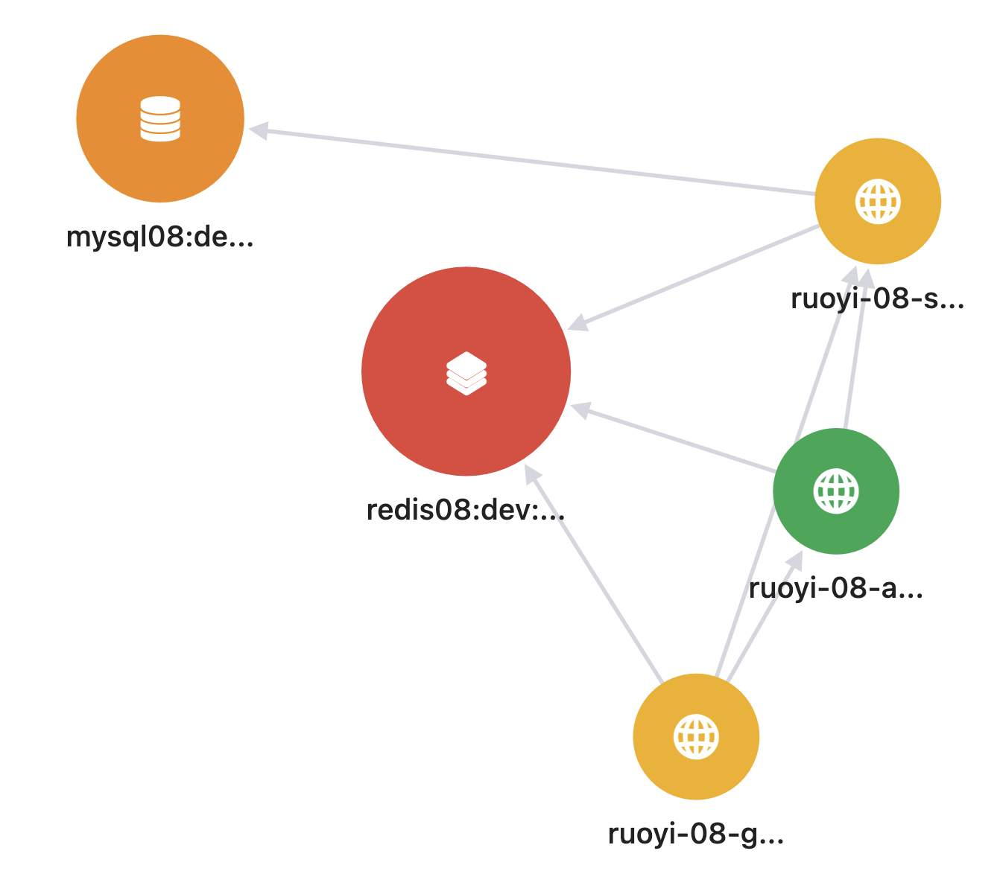
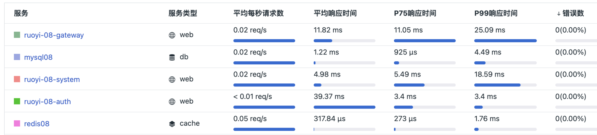
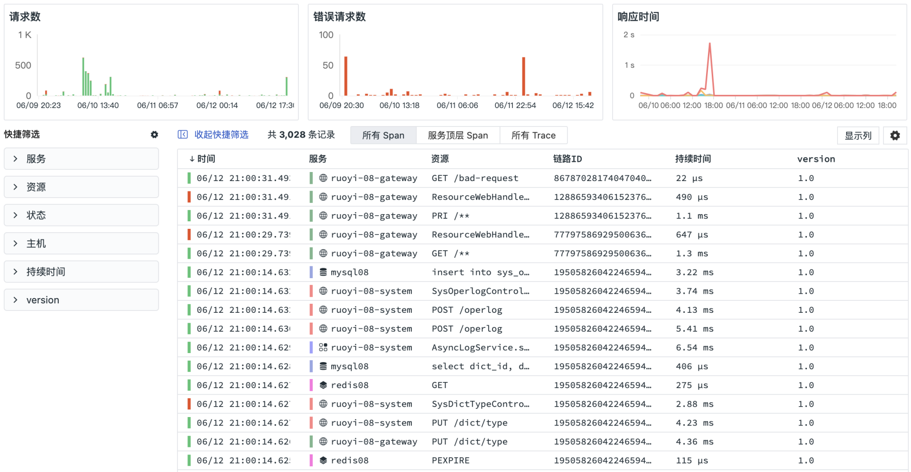
我们再来看下RUM。
RUM全称是 Real User Monitoring，用户访问监测。随着移动互联网的发展，越来越多的企业最终的业务表现形式都汇聚到了终端用户侧，也就是RUM端。具体形式有 Mobile App、Web页面、小程序（微信、支付宝、头条）等。真实用户的终端体验会直接影响终端用户的新增、留存、企业形象甚至企业的营收。
那如何提升终端用户的使用体验呢？这是互联网行业乃至正在逐步进行数字化转型的传统企业必须要考虑的一个问题。
RUM采集数据的方式经过了好几代变更。目前市面上常见的是基于 W3C（万维网联盟）定义的 navigation-timing 标准，该标准详细定义了各种浏览器事件，通过浏览器事件的简单计算就可以算出来前端页面的首屏、白屏、DOM 加载、HTML 加载等时长，能够比测试环境的 F12 检查者模式更有效地收集生产环境中真实用户的前端体验，因此在当前 H5 应用场景越来越多的情况下极为流行。国内的很多商业软件都是依赖这个标准定制的 Web 监测体系。
但是，随着浏览器（尤其是 Chrome）以及前端技术的发展，navigation-timing 的局限性越来越明显。例如，前后端分离下单页面越来越多，在这种场景下，基于 navigation-timing 进行数据采集会比较繁琐。因此，W3C 又推出了一个新的标准 PaintTiming-github。
这个标准新提出了一些指标，包括：首次绘制（First Paint）、首次内容绘制（First Contentful Paint）等。这些指标能够更真实地反映用户在访问 Web 页面时的真实体验。我们这个示例采用的就是支持 PaingTiming 规范的数据采集。如果你对这个规范感兴趣，可以进一步阅读 《使用 Paint Timing API 提高性能》 《使用 Paint Timing API》这两篇文章。
我们可以在前端页面 index.html 中接入 RUM 可观测性 JavaScript 文件：
$ cd /usr/local/ruoyi/dist/
// 记得备份
$ cp index.html index.html.bkd
// 在 index.html 中添加 df-js
// 复制 DF 平台上的 js 内容，放至 index.html 内的 </head> 之前，然后保存文件,示例如下
$ vim index.html
<script src="https://static.dataflux.cn/browser-sdk/v2/dataflux-rum.js" type="text/javascript"></script>
<script>
window.DATAFLUX_RUM &&
window.DATAFLUX_RUM.init({
applicationId: 'xxxxxxxxxxxxxxxxxxxxxxxxxx',
datakitOrigin: 'xxx.xxx.xxx.xxx:9529',
env: 'test',
version: '1.0.0',
trackInteractions: true,
allowedDDTracingOrigins:["xxx.xxx.xxx.xxx"]
})
</script></head>
请注意，上述代码中的 “xxx” 都需要根据实际情况进行更改，更改说明如下。
这样在若依系统页面有访问之后，就可以在观测云的用户访问监测模块看到数据：
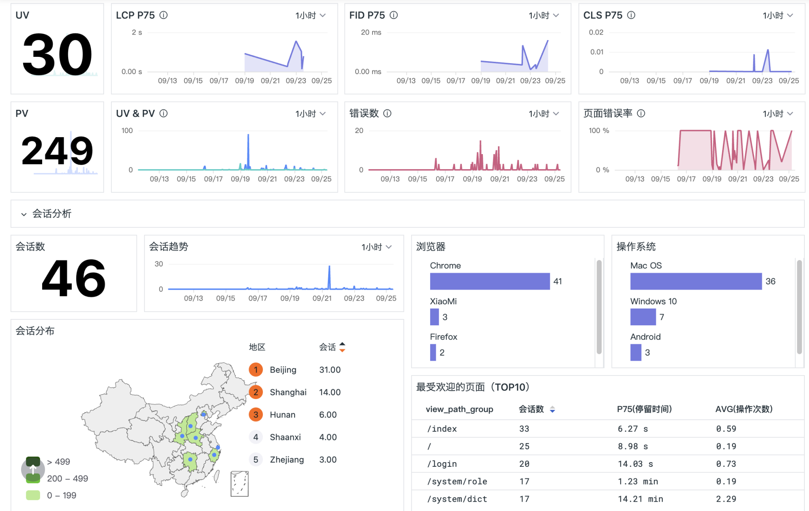
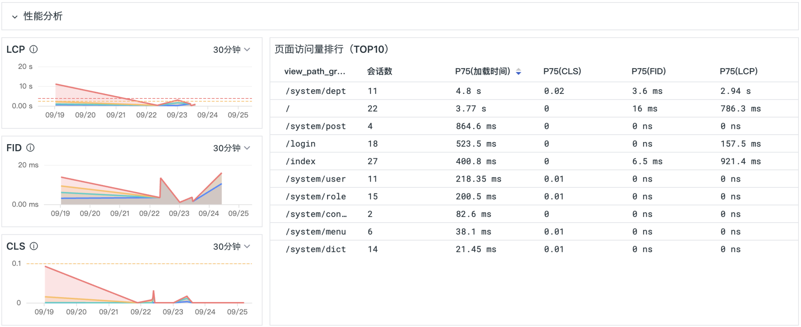
在我们分析问题的时候，很多情况下需要综合前端 RUM 和后端 APM 的情况来做关联分析，所以打通 RUM 和 APM 的数据是非常必要的。
要打通数据，需要在前端 HTML 中已添加的 df-rum-js 中添加 allowedDDTracingOrigins 标签，并填写前端对应的后端域名，例如要在 testobservability.local 添加 RUM 监控，需要在 allowedDDTracingOrigins 里配置 https://www.testobservability.local。如果存在多个域名，则需要把这些域名都进行配置，用逗号隔开，第三方域名可以不配置。
同样，为了构建数据联合的可观测性，我们也要把日志和应用性能监测关联起来，我们需要修改应用日志的输出格式（需开发介入）。例如，如果应用日志输出格式文件为 logback/log4j，ddtrace-agent java-0.70 版本后会自动将跟踪标识注入，只需要修改 logback/log4j 的 XML文件，在应用日志的输出内容中添加 trace_id 字段即可。更详细的说明你可以参考 datadog 官方文档。
## 首先在 pom.xml 的 dependency 中引入 datadog 依赖
<dependency>
<groupId>com.datadoghq</groupId>
<artifactId>dd-java-agent</artifactId>
<version>0.83.0</version>
</dependency>
## 0.83.0 为对应 agent 版本号，请查看datakit/data 中的 agent 版本号
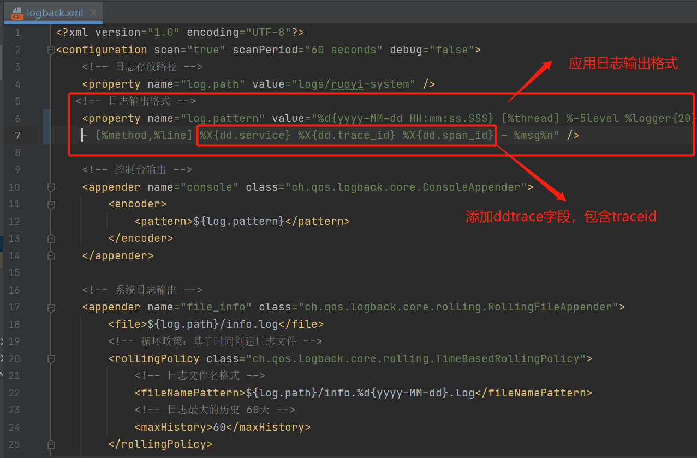
将日志和 APM 关联到一起之后，在 APM 链路数据下方的日志模块直接搜索 trace_id，就可以查看此次链路调用对应产生的应用日志了。
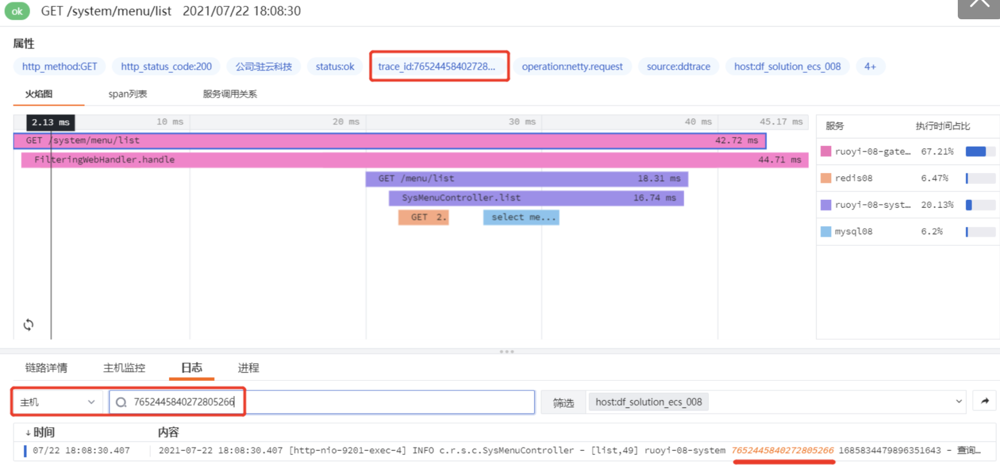
在这一讲中，我为你介绍了如何针对一个微服务系统，从指标、日志、链路追踪、前端用户访问等各维度来采集可观测性的数据，并建立数据之间的关联性。
有了这些数据之后，下节课，我们就可以利用它们分析和排查问题了。
在这节课的最后，我留给你一道作业题。
请根据我们这节课的内容，搭建一个测试环境。你也可以选择一个开源或是你正在维护的系统，来采集和展现可观测性相关的数据。
欢迎你在留言区和我交流讨论，我们下节课见！
你好，我是翁一磊。
在上节课的实战中，我为你介绍了如何采集一个微服务系统各方面的可观测性数据。收集好所有需要的数据之后，我们就可以在可观测平台方便地查看系统和应用软件的运行情况了。
这节课，我们就来看看在遇到问题的时候，怎么使用可观测性数据进行关联分析，定位到问题原因。
我在第 2 讲的时候曾经说过，可观测性应该是支持高基数、高维度和可探索性的工具，可探索性从另一个角度来说，也是需要将采集到的各种数据能够关联起来，方便在分析问题的时候有效地定位问题。
构建一个可观测系统的核心就是把丰富的数据关联在一起，比如我们需要知道一个访问请求的故障对应的日志是什么，同时它所在的主机（虚拟化环境）或是 Pod（容器环境） 的一些信息，以及它所依赖的中间件、数据库是否存在异常等等。
以前我们往往需要花费大量的时间成本人工在不同的监控、日志、管理系统中调取相关的 UI，即便使用一些工具实现了统一的数据展示，这个实施过程也非常非常复杂。
而观测云这个我们进行可观测性实战的平台，构建了完整的数据标签，也就是 Tag 的体系，而且保证了这些标签在整个系统中是唯一的 Key 且拥有一致性的表达。如: host, pod_name, trace_id, project, cloud_provider, status 等，这样我们在查询不同数据的时候，在构建相关的视图的时候，就可以获得完整的统一认知，也可以快速方便地构建不同数据直接的关联关系了。
下面我从高基数、高维度还有关联性的角度分别给你举一些例子。
基数对于可观测性很重要，因为高基数信息在调试或理解系统的数据时是最有用的。如果能够按照这些字段，根据其中的唯一 ID 来查询数据，就能够确定问题具体的影响范围。
我们以观测云 RUM 数据为例来看一下高基数的维度。上一节我们就说过，观测云提供对 RUM（也就是用户访问数据）的采集和分析，你可以快速了解用户访问环境、回溯用户的操作路径、分解用户操作的响应时间，了解用户操作导致的后端应用一系列调用链的性能指标情况。观测云采集的用户访问数据包括 6 种数据类型：
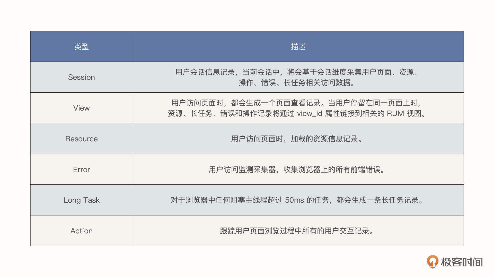
这 6 种数据类型的层次结构如下图：
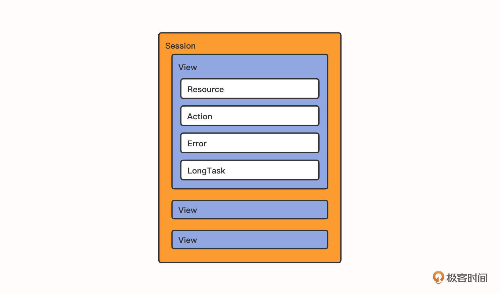
这些数据中包含以下的高基数：
这些高基数的数据能够帮助我们在分析问题的时候，定位到问题的具体影响范围，帮助我们更准确地进行故障排查。
一个原始数据在产生的时候，产生这个数据的对象本身可能只会知道有限的相关数据，例如：一个日志刚产生的时候，只有时间和消息体，但我们需要根据其输出的路径来赋予标签，形成多维度的数据。如果我们要知道这个日志是在哪台主机或者容器中产生的，那就要追加 host，或是 container_name 和 pod_name，还有容器相关的 deployment, namespace, node, project, version, cloudprovider 等各维度的信息。这些信息会在数据入库前，在全路径上追加标签来与对象进行关联。
下面这个例子，是观测云针对主机中产生的日志所赋予的相关标签：
class_name
create_time
date_ns
filename
filepath
host
index
line
log_read_lines
log_read_offset
log_read_time
message_length
method_name
msg
service
source
span_id
status
thread_name
trace_id
由于我们面对的是海量的实时数据，为了建立数据相互之间的关联，观测云的数据采集器 DataKit 在收集数据的过程中统一定义了标签。其中， DataKit 在兼容其他第三方工具或框架（例如Prometheus、各种日志采集器、OpenTelemetry 的各种 Instrument SDK）时，都会将其本身的字段转换为观测云自身的标签。
针对不同来源的数据，可能存在不同的数据结构，会出现一些非结构化数据，或者标签的原始数据不统一的情况，我们需要将这些数据结构化。又因为这些数据都是海量的实时数据，不可能像关系型数据那样进行 ETL（抽取、转换和加载），而是需要像流（Stream）一样处理，完成流（Streaming）、转换 (Transforming) 和输出 (Output) 这样一个过程，这就是可观测性的流水线（Pipeline）。
我们最终想要达到的效果就是让标签都关联起来。这种关联不仅仅是为了管理数据，更重要的是方便使用者观测。
我们需要将标签以一种对象的方式表达出来。例如，当我们看到任何数据存在 Host 这个标签时，就能把它和对应这个 Host 值的对象视图关联起来，这样无论在分析日志数据、应用性能还是用户访问数据时，都可以指向对应数据所在主机的相关视图，从而能够关联性地分析这台主机当时的负载情况以及其他相关信息。
有了可观测的数据，我们就可以从系统和应用的各个维度来定义 SLI，衡量系统的服务可靠性也就是 SLO 了。在第8讲我们强调说，要选取会影响最终用户体验的指标作为 SLI，然后根据实际 SLO 和错误预算来跟踪问题。如果你记不太清了，可以回去复习一下。
在观测云中，建立 SLO 之后，可以通过仪表盘来持续跟踪，并将相关的 SLI 统一展示出来，下图便是一个例子。同时，我们也可以针对 SLI 和 SLO 的状态设定监控器，及时获取异常事件的告警。
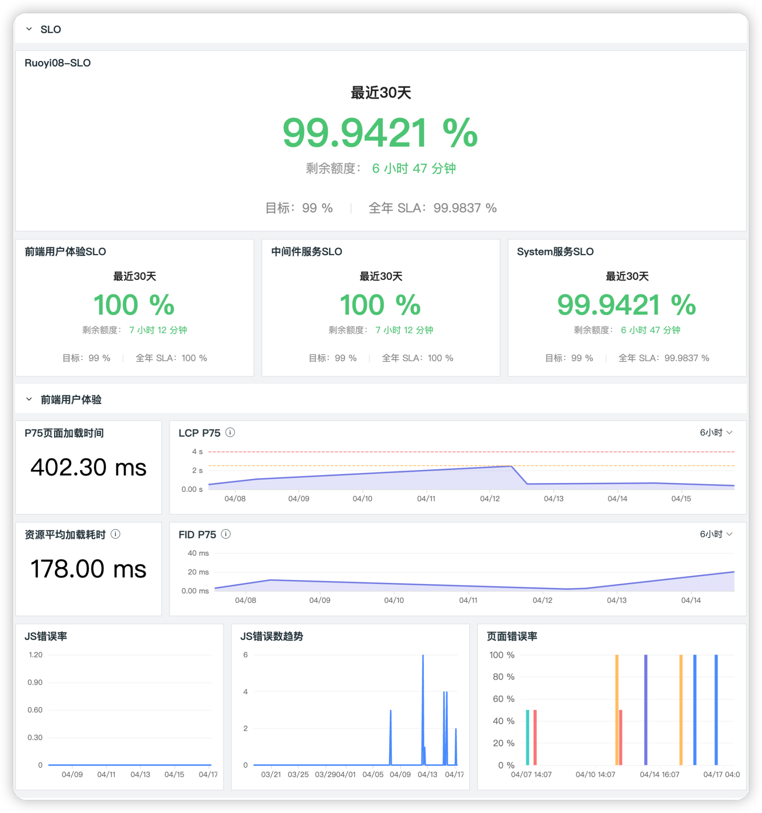
当你通过仪表盘直接查看整个服务 SLO 和错误余额的情况时，也能够同时查看相关 SLI 的情况。比如说，如果发现页面错误率有异常，你可以进一步进行分析，查看错误的详细情况。
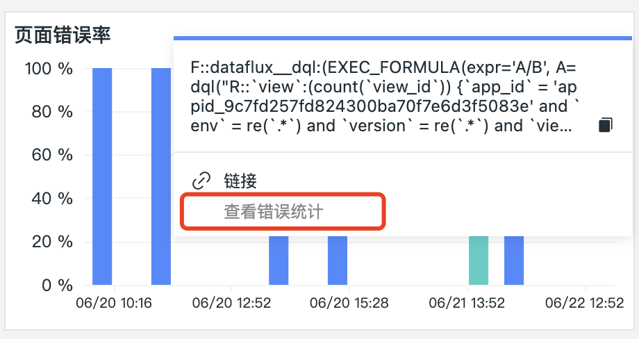
在错误分析页面，我们还能进一步查看多个维度的错误统计。例如，想了解具体哪些页面有报错，可以查看“页面错误率排行”，然后进一步下钻去查看这个页面（也就是 View 查看器）的详细信息。
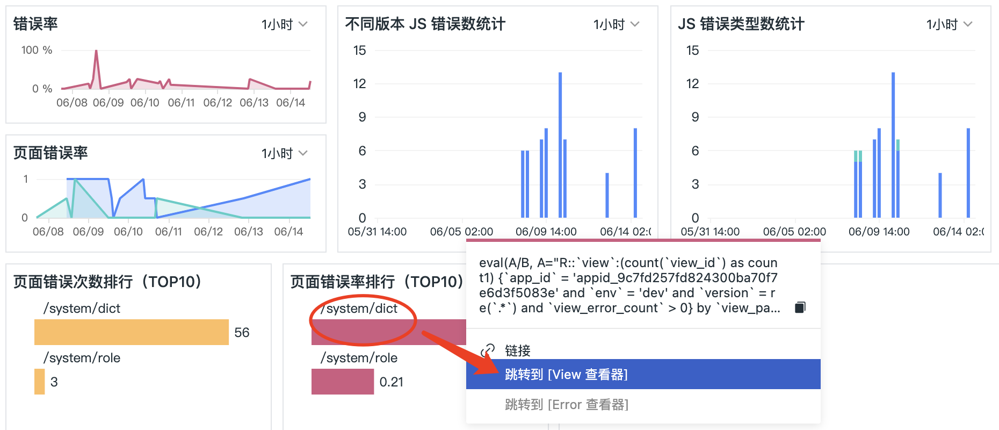
通过 View 页面，我们可以看到用户访问时的页面性能数据，包括页面地址、页面加载类型、页面加载时间、用户停留时间等。如果列表最左侧出现红色小三角的标记，说明这个页面是有报错的，点击其中一条可以查看详细的信息。
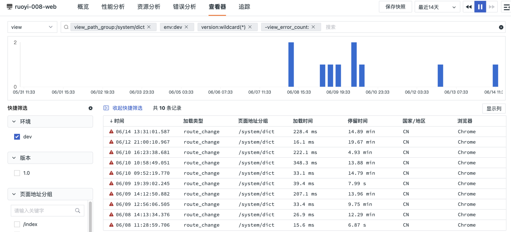
因为之前我们已经做了数据的关联，所以我们可以继续下钻，查看相关的链路、日志和指标信息，还能够直接查看相关联的视图。也就是说，在一个界面中，我们可以多维度地查看各种数据。
就像我之前说过的，在现今复杂的系统中，面对一个问题，我们很可能并不知道问题的原因是什么，因此只有将数据统一和关联起来，才能够“自由”地分析问题，找到问题的应对策略。
比如说，点击“Fetch/XHR”的标签页，我们就可以查看用户在访问时，向后端应用发出的每一个网络请求，包括发生时间、请求的链路和持续时间；如果网络请求存在对应的 TraceID，而且已经和前端用户访问的数据进行了关联，那么我们就可以点击列表中的某个请求，进一步下钻来分析问题。
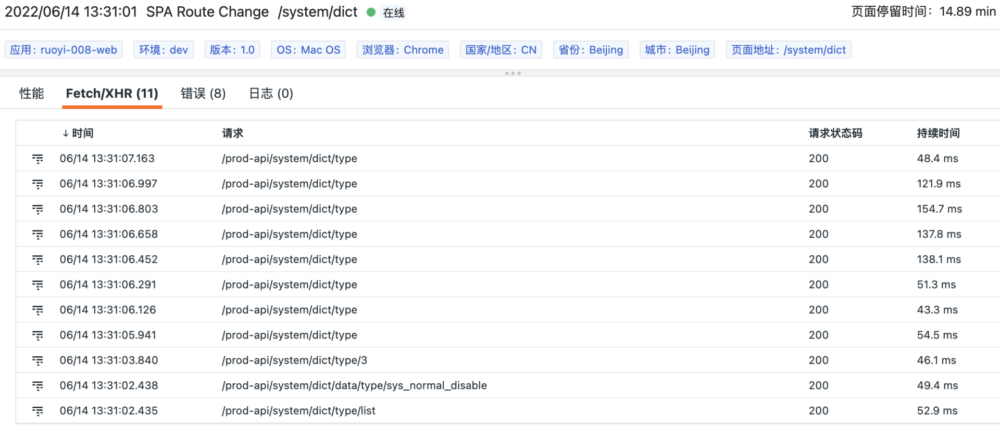
点开具体的请求之后会跳转至对应链路的详情页，这里我们可以看到链路 Tracing 的详细信息，包括整条链路中每个 Span 的流转和执行时间。如下图所示，这时候我们可以注意到有一条红色标记的 Span，这表示系统有报错，我们可以在详情中查看详细的报错信息，定位问题的原因。
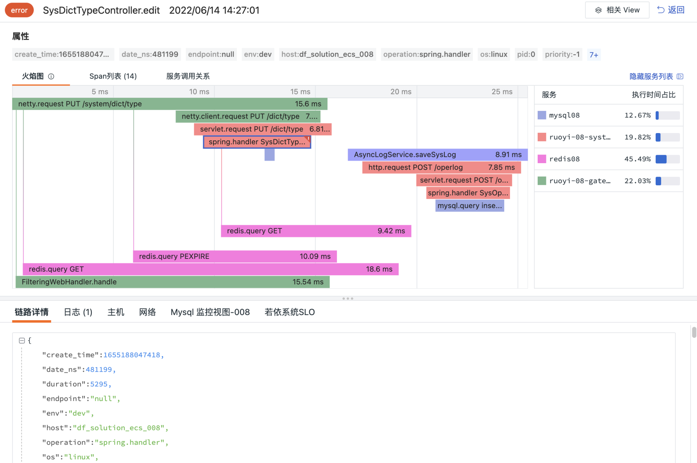
还有的时候，问题的情况比较复杂，所以我们希望不仅能够查看链路的属性和耗时，也能够直接查看相关的日志、主机的性能、网络情况以及相关联的视图，将各维度的数据综合在一个界面来分析。
在观测云中，如下图所示，当我们查看链路的详细信息时，也能够同时关联地分析链路发生时相关主机的负载情况（包括指标和网络）、相关的日志等信息。
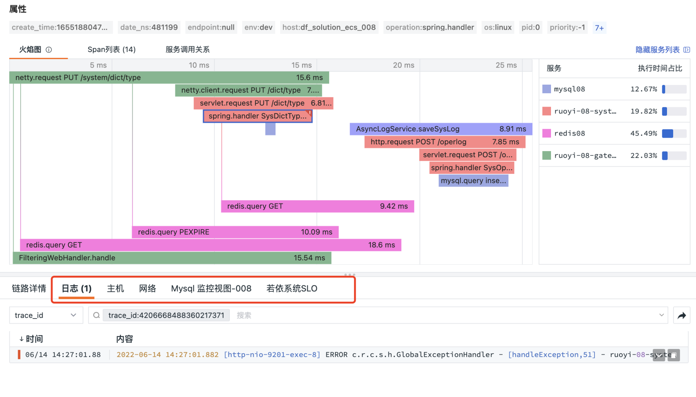
同时，我们可以在观测云中自定义绑定视图到查看器，在上图中，“链路详情”右侧的各种视图就都是动态关联的。将内置视图与链路服务、应用、日志源、项目、或其他自定义字段进行绑定，匹配字段值的查看器，然后通过侧滑详情页查看新增被绑定的内置视图。
我们可以根据服务的类型、应用 ID 或者标签等维度来进行关联，而不是写死一个维度，只能往固定方向排查。例如在下图中，可以将 MySQL 数据库的监控视图与 MySQL 相关的服务绑定在一起，这样在查看 MySQL 相关的链路时，也能够同时查看数据库的负载情况，更加全面地分析问题。
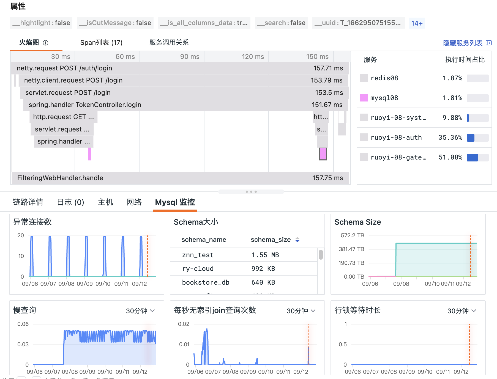
好了，这节课就讲到这里。通过这节课的实战，相信你已经看到了，建立了可观测之后，在调试或排查问题时，你可以通过探索数据来迭代调查你关心的条件，看看它能揭示系统的什么状态。
在这个过程中，你不需要提前预测问题，只需要按照你的思路去提出问题，去寻找线索或答案，然后提出下一个问题，再下一个。这样一遍又一遍地重复这个模式，就能在大海中找到你要找的那根针。
所以说，能够跟踪代码并知道时间花在了哪里，或者从用户的角度再现行为总是很有帮助的。无论你的软件架构是什么样子，可观测性无疑可以提高团队效率，发现和解决生产环境中不可预测的问题。在现代分布式系统中，可观测性工具就像我们的手术刀和探照灯，变得越来越不可或缺。
在这节课的最后，我留给你一道作业题。
请根据我们这节课的内容，通过可观测性的数据分析一下你负责的系统，查找一下平时你可能不知道的一些问题。如果有所收获或者发现，欢迎你在留言区和我交流讨论。
我们下节课见！
你好，我是翁一磊。
在第 10 讲中，我们一起构建了微服务系统的可观测性，我使用的是一个在主机中部署应用的例子。而如今，容器技术已经席卷了基础设施世界，它非常适合快速扩展或频繁发布的微服务架构和环境，容器近年来的使用量也在迅速增加。
但是采用 Docker、containerd 或其他容器运行时会让编排的复杂性显著增加，这就到了 Kubernetes 发挥作用的时候了。这节课，我们就来看看如何构建基于 Kubernetes 的系统和应用的可观测性。
受到篇幅限制，Kubernetes 的基础概念和运行、管理机制我就不多做介绍了。极客时间也有关于 Kubernetes 的优秀课程，如果有需要，你可以系统地去学习一下。
Kubernetes 的出现，要求我们重新思考和定位监控的策略，特别是如果你习惯于监控传统的、长期存在的主机，例如虚拟机或物理机。就像容器彻底改变了我们对在虚拟机上运行服务的看法一样，Kubernetes 也改变了我们与容器化应用程序交互的方式。
在传统的、以主机为中心的基础架构中，我们只有两个主要层面需要监控：主机和应用程序。容器的出现在主机和应用程序之间添加了一个新的抽象层；而现在，编排容器的 Kubernetes 也需要进行另外的监控。这意味着我们现在需要监控 4 个不同的层面，每个组件都有它的特殊性和侧重点：
在容器之前，标签对于监控基础设施来说很重要，它让我们能够对主机进行分组，并从不同的维度对指标进行聚合。而容器环境则带来了更多需要跟踪的对象，它们的生命周期甚至更短。
这时候，为了让你收集的数据尽可能地有用，你应该设法使用标签标记你所管理的 Pod，以便查看应用程序和基础设施的任何方面，比如说环境（开发、测试、预生产、生产等等）、应用程序、版本、以及项目和团队等等。这些标签对于 Kubernetes 的监测是非常重要的，有了它们，你才能够跨 Kubernetes 架构的不同层面和组件来进行数据的聚合、关联和分析。
从所有容器和 Pod 中收集指标和事件，然后监控 Kubernetes 基础设施的运行状况至关重要。但是，要了解最终用户使用产品的体验，你还需要监控实际在这些 Pod 中运行的应用程序。由于 Kubernetes 会自动安排你的工作负载，所以要想在每次启动或重启容器时手动配置检查，然后从这些应用程序收集监控数据变得不再现实了。
那我们应该如何构建基于 Kubernetes 的应用程序可观测性呢？
建立Kubernetes 系统的可观测性也包括了多个维度，像指标、日志、链路追踪、前端用户访问等等。你可能已经使用过开源工具，例如 Prometheus、ELK、Jaeger ……主要的问题还是不同的数据需要不同的工具，难以进行统一和联合，在分析问题时会影响效率。那在这一节中，我还是以观测云为例，带你看一些具体的案例。
环境的准备比较简单，你可以创建虚拟机，部署 Kubernetes 集群。当然，如果只是想做个实操演练，用单机也是可以的。
如果你已经注册了观测云账号，在控制台的“集成”菜单，选择 Datakit -> Kubernetes 获取最新的 datakit.yaml 文件，然后把 datakit.yaml 文件中的 ENV_DATAWAY 环境变量值中的 token 替换为你实际的工作空间 token，你可以在“管理”菜单中的基本设置中查看它。
完成之后，你通过 DaemonSet 的方式进行部署，也可以通过 Helm 的方式进行部署。
安装完成之后，不需要额外配置，DataKit 默认已开启一些系统指标的采集。如果要修改这些采集器的默认配置，可以通过 Configmap 方式挂载单独的 conf 来配置。部分采集器可以直接通过环境变量的方式来调整。详细的配置可以参考这里。
让我们首先来看一下监控指标。
观测云能够监测 Kubernetes 中各类资源的运行状态和服务能力，包括 Kubernetes Clusters、Deployments、Replica Sets、Services、Nodes 等。
Kubernetes 生态系统包括两个互补的附加组件，它们可以从集群中聚合和报告有价值的监控数据。这两个组件分别是 Metrics Server 和 kube-state-metrics。
而观测云通过 Metrics Server 获取和展示 Kubernetes 的性能指标，这包括 Pod 数量、Deployment 数量、Job 数量、Endpoint 数量、Service 数量、CPU、内存、Pod 分布等；通过 kube-state-metrics 获取和展示 Pod 相关的数据指标，例如 Pod desired、Pods ready、Pods Available、Pod Unavailable等。通过灵活的自定义能力，你可以通过观测云构建有关 Kubernetes 集群、节点、Pod 等各维度的视图。
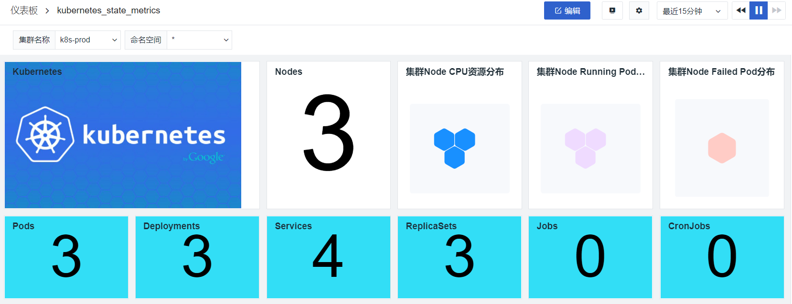
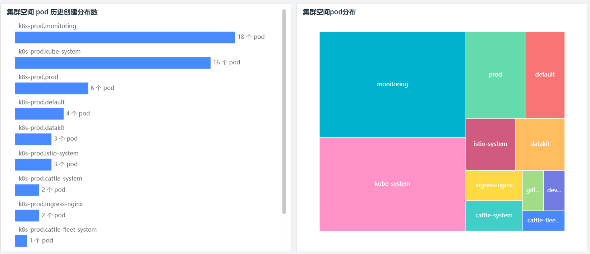
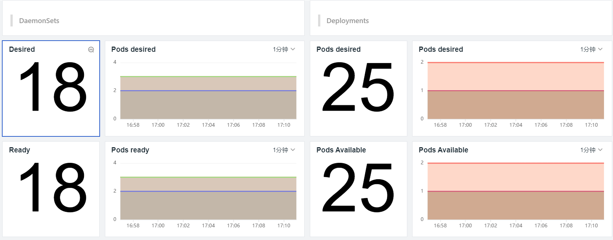
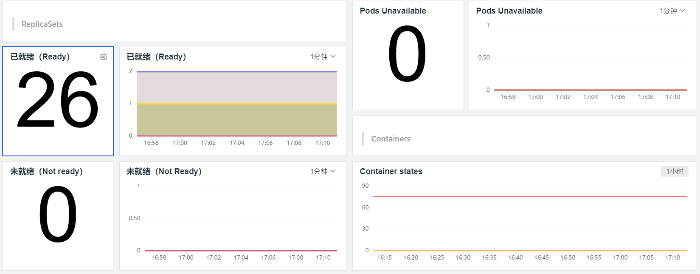
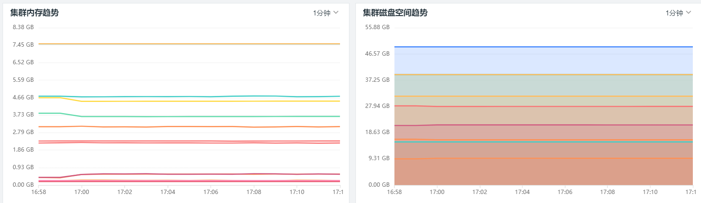
再来看看日志。
对于企业的应用系统来说，日志的地位非常重要，特别是在 Kubernetes 环境，日志采集就更复杂了。因此 DataKit 对日志采集提供了灵活的支持。这里我也借助 DataKit，来介绍一下观测云在日志采集方面的不同之处，详细的步骤就不在文稿中赘述了，你可以直接参考这里的文档。
DataKit 可以采集输出到 stdout 的容器日志，使用 datakit.yaml 部署 DataKit 后，就会默认开启 container 采集器。此时会在 DataKit 容器中生成 /usr/local/datakit/conf.d/container/container.conf 配置文件，默认配置是采集除了 pubrepo.jiagouyun.com/datakit/logfwd 开头的镜像外的所有 stdout 日志。
当然，如果你想进一步过滤日志采集对象，可以参考上面给出的文档链接，进行进一步配置。
为了便于在 Kubernetes Pod 中采集应用容器的日志，观测云提供了一个轻量的日志采集客户端。这是一种使用 Sidecar 模式的日志采集方式， 即利用同一个 Pod 内的容器共享存储，让 logfwd 以 Sidecar 的模式读取业务容器的日志文件，然后发送给 DataKit。
使用这种方式，DataKit 可以自动追加一些 Pod 的 Kubernetes 属性字段，如 Pod 名称以及 Kubernetes 命名空间等信息。同时，开发者可以不用修改日志的配置，依然将日志输出到磁盘，甚至可以不用外挂存储，logfwd 就能直接从 Pod 自身存储捞取日志推送出来（但日志需做好自动切割设置，避免将 Pod 存储打满）。
另一种方式是开发者直接将应用日志推送到 DataKit 指定的服务上，比如 Java 的 log4j 以及 Python 原生的 SocketHandler 都支持将日志发送给远端服务。这种形式的特点是日志会直接发送给 DataKit，中间无需落盘，节约了数据存储空间。
还有一种方式是直接进行文件采集。Linux 主机安装的 DataKit 采集该主机上的日志的方式是，复制 logging.conf 文件，然后再修改 logging.conf 文件中的 logfiles 的值为日志的绝对路径。在 Kubernetes 环境下，需要先把 Pod 生成的日志目录 /data/app/logs/demo-system 挂载到宿主机上 /var/log/k8s/demo-system，再使用 Daemonset 部署 DataKit ，挂载 /var/log/k8s/demo-system 目录，这样 Datakit 就能采集到宿主机上的 /rootfs/var/log/k8s/demo-system/info.log 日志文件了。
APM 链路追踪和 RUM 前端用户访问的数据都是从应用的角度来收集的，在 Kubernetes 的环境中，采集数据的原理和在主机环境中类似，这个我们在第 10 讲也提到过。当然，在 Kubernetes 环境中，配置步骤会有些不一样。
APM 这块总体来说会有这么几步：
RUM 这块，Datakit 要开启 RUM 采集器是需要配置环境变量：
- name: ENV_DEFAULT_ENABLED_INPUTS
value: rum
用户访问监测使用的 Datakit 地址必须是网络能够访问到的，同时你需要修改 Datakit 的配置文件 /usr/local/datakit/conf.d/datakit.conf 的 listen=“0.0.0.0:9529”。在实际生产环境中，建议将 RUM 使用的 Datakit 部署到 Kubernetes 集群的外部。
如果你想进一步地进行实验，可以直接参考这里的文档。
在我们使用 Kubernetes 平台构建容器化的应用过程中，微服务在软件应用中迅速普及，大型应用往往被分解成多个微服务。虽然每个微服务能通过容器化在单独的容器中运行，但是服务间通信的网络拓扑仍然非常复杂。
既然微服务之间网络通信非常重要，那我们就非常需要这样的基础组件了。它能够实现多个服务代理，确保受控的服务到服务之间的通信通道安全和健壮。
这就不得不提到服务网格（Service Mesh）了。服务网格描述的是组成这些应用程序的微服务网络以及它们之间的交互。单个服务调用表现为 Sidecar，即我们所说的边车模式，如果有大量的服务，就会表现出网格。
在下面这张图中，绿色方格代表应用微服务，蓝色方格代表 Sidecar，线条表示服务之间的调用关系，Sidecar 之间的连接会形成一个网络。
Istio 是一个开源服务网格，它透明地分层到现有的分布式应用程序上，提供了对整个服务网格的行为洞察和操作控制的能力，它还能提供一个完整的，满足微服务应用各种需求的解决方案。
Istio 核心组件主要包括数据平面和控制平面两部分。
Envoy 原生支持 Jaeger，链路追踪所需 x-b3 开头的 Header （包括 x-b3-traceid， x-b3-spanid, x-b3-parentspanid， x-b3-sampled， x-b3-flags）和 x-request-id 在不同的服务之间由业务逻辑进行传递，并由 Envoy 上报给 Jaeger，最终 Jaeger 生成完整的追踪信息。
在 Istio 中，Envoy 和 Jaeger 的关系如下。
在这张图中，Front Envoy 指的是第一个接收到请求的 Envoy Sidecar，它会负责创建 Root Span 并追加到请求 Header 内。当请求到达不同的服务时，Envoy Sidecar 会将追踪信息进行上报。Envoy 链路追踪原生支持 Jaeger， 也支持集成外部追踪服务，例如 Zipkin。Istio 链路追踪提供全局配置 zipkinAddress，Envoy的上报地址通过 proxy_init 的 –zipkinAddress 参数传入。
如果你想对服务网格进行实验，给你推荐一个叫做 BookInfo 的应用程序。它由四个单独的微服务构成，这个应用模仿在线书店的一个分类，显示一本书的信息。页面上会显示一本书的描述，书籍的细节（ISBN、页数等），以及关于这本书的评论。
Bookinfo 应用程序分为四个单独的微服务：
我们只需要把 Istio 的 ConfigMap 中的 zipkin.address 修改为 DataKit 地址，同时在 DataKit 中开启 Zipkin 采集器，就能把 Bookinfo 的链路数据推送到 DataKit 了。
如果你想进一步地实验，可以直接参考这里的文档。
好了，这节课就讲到这里。这节课，我们主要介绍了怎样收集基于 Kubernetes 的系统和应用的各维度的观测数据，包括指标、日志、链路追踪、前端用户访问等。通过 Kubernetes 构建应用带来了很多便利性以及可扩展性，但随着服务之间的依赖越来越复杂，构建可观测性变得更加有必要。
在采集好各方面的可观测性数据之后，你可以参考上节课的内容进一步查看和分析数据。在下一讲，我们会一起学习如何构建软件持续集成和发布的可观测性。
在这节课的最后，留给你一道思考题。
在建立 Kubernetes 系统和应用的可观测方面，你有没有实际的工作经验和体会？欢迎你在留言区留言进行分享和讨论。我们下节课见！
你好，我是翁一磊。
在之前的课程中，我们就讲过可观测性对于构建 DevOps 的重要作用。而 CI/CD，持续集成（Continuous Integration）和持续交付（Continuous Delivery）就是 DevOps 的重要基础。在这一讲中，我会通过 GitLab 持续集成与金丝雀发布这两个具体的例子，来为你具体介绍一下怎么为这些过程建立可观测性。
首先来说一下持续集成。持续集成的重点是将各个开发人员的工作集合到一个代码仓库中。通常，我们每天都要进行几次持续集成，主要目的是尽早发现集成错误，让团队的合作更加紧密。而持续交付的目的是最小化部署或释放过程中固有的摩擦。它通常能够将构建部署的每个步骤自动化，以便（在理想情况下）在任何时刻都安全地完成代码发布。
常见的 CI 工具有 Jenkins、Travis CI、GoCD 和 GitLab CI 等等。这节课，我会以 GitLab 为例，为你介绍软件持续集成的可观测。
GitLab CI 是为 GitLab 提供持续集成服务的一整套系统。GitLab 8.0 以后的版本是默认集成了 GitLab-CI 并且默认启用的。
使用 GitLab CI 需要在仓库根目录创建一个 gitlab-ci.yml 的文件，开发人员通过 gitlab-ci.yml 在项目中配置 CI/CD 流程，在提交后，系统就会自动或被手动地执行任务，完成 CI/CD 操作。
GitLab CI 的配置非常简单，可以通过 GitLab-Runner 配合 GitLab-CI 来使用。
GitLab-Runner 是一个用来执行软件集成脚本的东西。一般来说，GitLab里面的每一个工程都会定义一个属于这个工程的软件集成脚本，它可以自动化地完成一些软件集成工作。当这个工程的仓库代码发生变动时，比如有开发人员提交了代码，GitLab 就会把这个变动通知给 GitLab-CI，然后 GitLab-CI 会找到和这个工程相关联的 Runner，通知 Runner 把代码更新到本地并执行预定义好的执行脚本。
GitLab Runner 由 Go 语言编写，最终打包成单文件，所以只需要一个 Runner 程序和一个用于运行 Jobs 的执行平台就可以运行一套完整的 CI/CD 系统。执行平台可以是物理机或虚拟机、或是容器 Docker 等，我更推荐使用 Docker，因为它搭建起来相当容易。
随着微服务的流行，企业开始将软件单体服务架构逐渐过渡到微服务架构。微服务的一个特点是工程模块众多，部署起来也相对麻烦，CI/CD 工具虽然能够很好地集成交付，但是集成过程中出现的一些问题很难进行统计分析，可观测性可以很好地解决这个问题。
接下来，我还是以观测云为例，带你来看一看如何构建持续集成的可观测性。我们可以通过可视化功能直接查看在 GitLab 的 CI 结果，包括 Pipeline 和 Job 的成功率、失败原因、具体失败环节，为你的代码更新提供保障。
在本节课的实战示例中，软件集成的可观测构建流程如下：
可以使用如下方式安装 GitLab，其中端口 8899 是 gitlab-ui 端口，而 2443 是 gitlab ssl 端口。
docker run --name=gitlab -d -p 8899:8899 -p 2443:443 --restart always --volume /data/midsoftware/gitlab/config:/etc/gitlab --volume /data/midsoftware/gitlab/logs:/var/log/gitlab --volume /data/midsoftware/gitlab/data:/var/opt/gitlab docker.io/gitlab/gitlab-ce
然后，修改 gitlab.rb 配置文件，重启，查看 GitLab 版本号以及初始密码。
这些都完成以后，可以使用账号 root，在浏览器中登录 http://ip:8899 并修改密码，然后通过菜单 Projects-> Your projects -> New projects -> Create blank project，创建第一个工程项目。
#访问地址
external_url 'http://192.168.91.11:8899'
# 设置超时时间，默认 10（单位 s）
gitlab_rails['Webhook_timeout'] = 60
docker restart gitlab
docker exec -it gitlab cat /opt/gitlab/embedded/service/gitlab-rails/VERSION
docker exec -it gitlab cat /etc/gitlab/initial_root_password |grep Password
接下来，我们使用如下命令安装 GitLab-Runner：
docker run -d --name gitlab-runner --restart always \
-v /data/midsoftware/gitlab-runner/config:/etc/gitlab-runner \
-v /var/run/docker.sock:/var/run/docker.sock \
gitlab/gitlab-runner:latest
因为 GitLab Runner 目前不支持全局配置，所以 Runner 的密钥只能去 project 里面查找。进入刚刚创建的 project -> settings -> runners，复制密钥，下一步 Runner 注册的时候会用到它。
接下来，我们使用下面这个命令将 Gitlab-Runner 注册到 Gitlab。参数的使用方法可以参考 GitLab 文档。
docker run --rm -v /data/midsoftware/gitlab-runner/config:/etc/gitlab-runner gitlab/gitlab-runner register \
--non-interactive \
--executor "docker" \
--docker-image alpine:latest \
--url "http://192.168.91.11:8899" \
--registration-token "U6uhCZGPrZ7tGs6aV8rY" \
--description "gitlab-runner" \
--tag-list "docker,localMachine" \
--run-untagged="true" \
--locked="false" \
--access-level="not_protected"
下一步，我们就需要配置 GitLab Webhook 了。我们要进入刚刚创建的项目，选择 Settings -> Webhooks，填写 URL，勾选 Job events 和 Pipeline events，保存。
然后可以点击 Test ，选择 Pipeline events ，这时会触发一个 Pipeline 事件将数据推送给我们刚刚配置的 Webhook 地址。查看状态，检测这个过程是否正常。
最后，我们还要编写 .gitlab-ci.yml。进入刚刚创建的项目，选择 CI/CD-> Editor，填写脚本内容，内容如下所示。点击保存后，自动触发 CI/CD，触发后会将过程通过 Webhook 推送到刚刚配置的 Webhook 地址。
# 设置执行镜像
image: busybox:latest
# 整个pipeline 有两个 stage
stages:
- build
- test
before_script:
- echo "Before script section"
after_script:
- echo "After script section"
build_job:
stage: build
only:
- master
script:
- echo "将内容写入缓存"
- sleep 80s
# - d ps
test_job:
stage: test
script:
- echo "从缓存读取内容"
如果需要采集 GitLab CI 过程中的数据，就像前几节课介绍的，我们首先需要部署和安装 DataKit，然后打开 DataKit 的 gitlab.conf 文件，重启 DataKit。
cd conf.d/gitlab
cp gitlab.conf.sample gitlab.conf
等到 Pipeline 推送成功后，我们可以使用可视化的方式，通过观测云平台的仪表盘和查看器观测 Pipeline 的整体执行情况。具体方式是：在菜单 CI 中选择概览，查看 Pipeline 和 Job 总体执行情况，包括 Pipeline 执行的成功率、执行时间，Job执行的成功率、执行时间等。
进入查看器，我们还可以查看 Pipeline 和 Job 每次执行的具体情况，点击明细可以查看火焰图和 Job 列表，进一步分析 Job 执行详细情况。
说完了集成，让我们再来看一看发布。
在移动互联网时代，用户对产品新功能的要求越来越多，软件迭代的速度也越来越快。但是，如果每次发布新版本都是直接替换老版本，这种跳跃式的发布是非常危险的。因为就算我们做到了完全自动化的持续集成和发布，也很难检测到所有和发布相关的缺陷，只有在生产环境中，大量真实用户开始使用产品时，我们才会发现之前可能完全没有预料到的问题。
因此，金丝雀发布是现在互联网软件常用的一种发布方式。这个名称起源于以前人们会将金丝雀带入煤矿，通过它们来检查煤矿中是否有危险气体，以此保证人类的安全。而这里所说的金丝雀发布也是为了安全起见而存在的。
金丝雀发布是指在发布新版本的时候，先切分部分的流量给新版本，等系统稳定了之后再切分所有流量。这样一旦出现问题，我们只需要马上修改切分的流量，不需要重新发布版本，这就大大减少了发布风险。
在金丝雀发布的场景下，可观测性也是必不可少的。通过可观测性，工程师们能够知道新版本上线开始接收部分流量后的运行状态，从而分析出系统是否正在按照期望运行，新版本的使用是否正常等情况，从而判断下一步的动作。
我在第 12 讲中，为你介绍了通过服务网格部署 BookInfo 的应用软件。这一讲我也会使用它来为你介绍金丝雀发布的场景。在这个场景里，里面的 reviews 微服务提供了3个版本：
如果需要测试多个版本的 reviews 服务，你可以先参考这里的步骤，重新进行部署（主要是去除 reviews 服务的部署）；然后通过 GitLab-CI，对 reviews 服务进行自动化部署，可以参考这里的文档。示意图如下：
为了实现金丝雀发布，需要在部署微服务的 Deployment 上增加 app=reviews 的标签，用来区分微服务名称。
在第一次部署的版本上增加 version=v1 的标签，第二次部署的版本上增加 version=v2 的标签。这样，根据标签就可以控制每个版本进入了多少流量了。比如，发布完 v2 后，让 90% 的流量进入 v1 版本，10% 的流量进入 v2 版本，等验证没问题之后，将流量完全切换到 v2 版本，下线 v1 版本，这样整个发布的过程就完成了。
整个模拟和配置的过程我就不详细介绍了，你可以参考这里的步骤。（请注意，如果你参考之前的文档，使用 GitLab-CI 部署了 3 个版本的 reviews 服务，可参考此处步骤删除之前部署的服务；如果你没有使用 Rancher 进行部署，可以直接使用 kubectl 命令，对之前部署的 reviews 服务进行 delete，然后 apply 重新进行发布）。
在做了不同版本的应用发布和流量切分之后，让我们来看一下实际的金丝雀发布可观测效果。
登录观测云，在应用性能监测的服务拓扑里面，打开“区分环境和版本”的配置，可以看到reviews 服务有两个版本，其中， reviews:test:v2 调用 ratings 服务，而 reviews:test:v1 是没有调用的。
在链路详情界面查看火焰图，如果存在链路调用错误，或者超时等问题，这里都能清晰地看到。这里的 project、version 和 env 标签，就是在 GitLab 中 bookinfo-views 项目的 deployment.yaml 文件定义的 annotations。通过对整个应用进行链路追踪，我们就能在观测云上查看应用的健康关键指标，及时处理异常请求了。
同时，我们也可以构建针对不同版本应用的请求和响应时间等各维度的监测。这样，我们能够对线上环境的金丝雀发布进行观测，从而了解版本流量切换的状态，确保使用新版本的用户能够正常地使用产品。
在观测云的“场景”菜单中，可以新建仪表板，并选择内置的 Istio Mesh 监控视图。在这个视图里面可以看到调用 reviews-v1 和 reviews-v2 的比例基本是 9:1.
如果应用的状态稳定，我们就可以将流量全部切换到新版本；而如果发现问题，例如图中可以看到 v2 的响应时间有所增加，因为引进了一个新的 ratings 服务。假如响应时间影响了用户的使用，这时候就需要将流量切回到 v1 版本，在优化 v2 的性能之后，重新进行金丝雀发布，查看服务和用户使用的状态。
好了，这节课就讲到这里。
这节课，我通过 GitLab-CI 建立可观测性的例子，让你更好地了解了持续集成流水线和任务的执行状态；同时，我还通过一个为金丝雀发布建立可观测性的例子，介绍了在为基于 Service Mesh 服务架构的应用发布过程中，如何更高效地发现新版本的问题，为提升软件质量提供保障。这些，都是可观测性在实际软件集成和发布过程中的具体应用，希望能够帮助你更具体地理解可观测性。
在这节课的最后，留给你一道思考题。
你在实际的工作中，有没有负责过软件的集成和发布，遇到过什么难点？如果建立了可观测性，这些问题是否能够解决？欢迎你在留言区留言进行分享和讨论。
我们下节课见！
你好，我是翁一磊。
前面几节课，我给你介绍了一些开源应用程序以及一款可以免费注册和使用的可观测平台。
不知道你有没有借助一些实验室环境来安装这些应用程序，或者结合你自己平时开发或运维的系统和应用，来构建可观测性。如果还没有的话，还是建议你具体实战一下，这会让你对可观测性有更加直观的理解。
那当我们真正开始建立可观测性时，又应该如何在组织和企业内进行更好地推广，应该以什么为参照？我们应当期待它达到什么效果呢？这节课，我们就来看看可观测性文化和框架的建设。
你可能还记得，我在第 7 讲就提到过文化相关的内容。不过那更多指的是可观测性驱动的软件开发，目的是鼓励开发同学承担更多的职责。而在这一节中，我想从更宏观的视角给你介绍可观测性文化整体的建设，让你能够在企业和组织内，进一步构建和推广可观测性。
可观测性文化的核心是支持推动可观测性的建设和发展，包括构建或实施反映最终用户体验的工具、支持快速和协作调试的工具、以及广泛的知识共享等等。当你的企业或者组织在建设可观测性文化时，这意味着把支持一个健康的生产环境所需的信息提供给负责该环境的每个人来使用，让团队中的所有人，清楚地了解在大多数情况下该做什么以及应该找谁，并且有一套很好的工具和流程，以便弄清楚生产环境的状态和问题。
要想达到这个目标，我们需要从下面这些方面着手。
可观测性文化一方面鼓励我们使用真实数据确定工作优先级并做出决策。而另一方面，可观测性文化又是反对专家文化或者说个人英雄主义的。这是因为，如果只是基于某位专家的说服能力做出决定（往往是根据以往的经验），团队其他成员的声音就会减弱，这会提高你的组织或团队在选择或决策时的错误率。
相反，我们通过可观测性提供的更清晰的客户体验和服务稳定性数据，可以更好地判断应该何时投资新功能或基础设施工作。当一个组织使用数据而不是以往的经验或个性力量做出决策时，意味着它支持团队成员提供更多有价值的上下文信息，支持成员更多地参与到决策中来。这也会让团队成员相信他们能够实现更好的变革，获得更多的参与感和成就感。
如果你开始使用来自可观测性实践的真实数据和见解做出决策，那么你也一定定义好了客户成功和满意意味着什么，而且也与内外部的合作伙伴、客户达成了协议。制定这类协议能够让你的团队在事件发生时做出更好的决策，因为他们清楚地了解剩余的错误预算，可以采取相应的行动（具体的行动指南请参考第 9 讲的相关内容）。
负责生产环境的组织和团队，一般都会根据其系统可用性的相关信息来定义告警。在云之前的时代，这些数据通常仅限于有关系统状态的信息，例如磁盘空间、存储性能 IOPS、可用内存等。但是面对当今复杂的分布式系统，我们需要利用更多数据来创建告警。从另一个角度来说，这意味着你可以根据对你的业务来说真正重要的事情发出告警，找出真正的问题或是影响，而不仅仅根据基础架构的情况作出判断。
特别是，如果你构建的可观测性包含了足够的上下文信息，例如，它可能包含你根据用户的实际体验去设定告警所需的数据。
理解了任何给定事件对业务影响的程度之后，就有可能建立一个告警系统，这个告警系统只会在碰到关键任务时才会去唤醒熟睡中的工程师。而当大家确信，除非是真的很重要的事件，否则就不会被寻呼时。那在问题真的出现的时候，会大大减少大家的厌烦感。
对告警的严重程度作出明确的划分非常重要，它可以提高待命人员的生活质量，同时还是一个明确的信号，表明你的组织重视团队的时间和专业知识。一个感到被重视的团队会更快乐，并且会更多地投入到组织和团队目标上去，这将是一个良性的循环。
对于许多团队来说，监控系统中定义的告警几乎从未被删除，只是不断地被添加。这就导致监控系统中存在很多年没有触发的告警，还有一些没有任何信息价值的告警，还有更多的告警会触发但是没有人注意，因为它并不重要，你忽略它一阵子它就会自己停止。
大家都很疲倦和厌烦，没有人会利用事件发生时得来的信息进一步完善告警系统。这是可观测性驱动环境的对立面。
我们需要彻底审查监控系统中当前定义的告警集，审查标准只有一个，就是正在监控的事情是否与最终用户体验真正相关？就像我在前面介绍的，只有在会影响到最终用户的使用和体验的时候，才真正地触发告警。
当你看到新问题时，可以添加新的触发器，但是一旦你调试完毕，在这个问题解决了之后，就该马上把它们取消。
因此，请授权你的团队删除或重新配置告警，尽量减少告警的影响，同时专注于客户体验。这里有一个附加的好处，那就是，当大家不必解释要忽略哪些告警时，让新人加入 On-Call 轮换机制会容易得多。可观测性文化使团队能够为业务做出正确的决策，同时也创造了一个健康的工作环境。
持续地对文档进行改进对于建立可观测性文化来说至关重要。及时更新的、完整的文档，包括能够给流程、升级路径、过去事件以及任何其他事件提供有用上下文的文档，都能让相关人员在支持生产工作时压力小很多。
文档不一定是运行手册、冗长的配置表或是 step-by-step 的详细说明，强化可观测性文化的文档可以是仪表盘视图上的注释，也可以是保存下来的快照（它保存了之前遇到特定问题时的查询方向和条件，能够帮助你重新搜索或运行）。特别是在编写事件报告时，我们应着眼于教育和支持未来的待命人员，让它们可搜索，并确保文档中包含图表或者链接，能够展示或者指向当时的数据情况。
许多团队会使用某种文档平台（例如Wiki）来描述系统和流程，但即使口头上说要让内容保持最新，不需要强制执行或奖励，可是一旦碰上生产事件激增、有更多的任务要去完成时，文档通常是最先被搁置的事情。为了取得成功，在运行复杂的分布式生产系统的优先事项中，文档工作必须被视为一等公民，文档的问题也应该是和软件 Bug 处在同样的优先级里。
保持复杂的分布式系统稳健运行，贡献所学知识，这应该是每个人的工作。
通过塑造企业文化来进一步构建可观测性是很好的开始，但与此同时，建立可观测性还必须有明确的指导方针。当我们评估可观测性最终的实现结果时，可以将其分解为 3 个关键问题：
无论使用什么样的工具或解决方案，上面三个维度都是我认为构建可观测性应重点关注的地方。而对应着这三个问题，我们可以将可观测性成熟的程度框架分为 3 个阶段。在每个阶段，重点都是在出现问题的时候，尽可能快地修复问题，或是减轻对最终用户的影响。
解决问题的第一步是知道问题的存在，而且最好是在最终用户知道或者是被真正影响之前。通常，知道问题正在发生就足以触发补救的措施。
例如，如果你部署了新版本的服务，而该服务触发了影响用户使用的告警，那么回滚部署就是补救问题的最快途径。我们不需要了解事件的全部影响或者诊断事件的根本原因，因为这些可以等到事后再做检查和修复。对系统进行更改是生产问题的最大来源，因此，在引入这些更改时能够感知到问题出在哪里是很重要的。
在这个阶段的关键动作和考量包括下面几点。
这一阶段的目标是快速了解问题的背景和影响。一旦告警触发，如果最近对系统的更改不是很明显需要回滚，下一步就要了解业务影响和严重性了。
例如，如果你确定只有一组有限流量切换中的用户受到影响，那么关闭该流量切换就可能解决问题。或者，如果对一个可用区域或集群的请求受到影响，你可以将请求重新路由到其他区域或集群。
为了将问题进行分类，工程师们需要将告警置于上下文中，从而能够快速地了解有多少客户或系统受到影响，以及被影响的程度。出色的可观测性使工程师能够对数据进行透视，并将焦点放在上下文的数据上，以此诊断问题。
在这个阶段的关键动作和考量如下。
这个阶段最好发生在问题被修复之后，此时工程师可以花时间定位和理解潜在问题，而不会受到业务和用户影响带来的直接压力。随着微服务数量的不断增加，对事件进行事后分析就像是复杂网络中的导航，它也决定了你需要与哪个服务所有者合作。
出色的可观测性可以让工程师把指标和告警直接与潜在的罪魁祸首联系起来。此外，它还能够预测潜在问题，防止此类事件再次发生。
在这个阶段的关键动作和考量如下。
通过这一节的介绍，我想让你知道，可观测性文化，以及通过这种文化促成的可观测性，不仅能够让团队里的工程师更轻松、更快乐，也能够推动更强大的业务，让我们更了解市场并对市场做出反应。
可观测性是一个快速发展的领域。如果你的组织和团队还处于规划和发展期间，正在寻求指导和最佳实践，你完全可以参考我在这节课中提出的可观测性成熟度框架，分阶段地实现，逐步完善可观测性的构建。
在这节课的最后，我留给你一道思考题。
通过了这一系列课程的学习，你现在的团队和组织是否已经建立了可观测性？建立到了什么阶段，你认为它对业务可靠性是否起到了足够大的帮助？又或者仍然存在哪方面的困难呢？
欢迎你在留言区和我交流讨论，我们下节课见！
你好，我是翁一磊。
一转眼，这门课程已经上线一个多月的时间了。从今年（2022 年）各种技术在线直播的趋势来看，可观测性这个话题确实是越来越火热，各个厂商和社区都在热烈地讨论这个话题。而这门课程设立的初衷，也是希望能够系统地介绍可观测性的概念、相关的知识体系，以及如何利用可观测性确保生产环境的可靠性。
学到这里，相信你已经能够比较深刻地理解可观测性了。可观测性并不是某一种工具所能提供的某种单一能力，它最终的目标是帮助我们随时理解软件系统的状态，无论这种状态我们之前有没有遇到过。
然而，可观测性这个技术仍然在如火如荼地发展。就像我在第 1 讲中提到的，Gartner 在今年的基础设施和运维自动化技术成熟度周期图里，把“可观测性”放在膨胀期波峰最顶端的位置，他们还预测在未来的几年里，可观测性将逐渐进入技术成熟期。所以，我也希望你可以继续对这一技术保持关注。
我也从个人角度列出了几个方向，它们虽然并不是新鲜的概念，但我认为它们将在可观测性领域持续发展。
当下，我们的产品和服务越来越多地以手机 App、小程序、网页等方式呈现给用户，用户使用各种客户端的时间越来越长。努力赚取用户注意力的应用越来越多，产品与服务的更新也越来越频繁。
在这样的大环境下，详细了解用户从哪里来，看了哪些页面，停留多长时间，访问速度是否够快，在哪里会遇到报错等等这些问题，不仅有利于挖掘每一个用户行为背后的真实需求，稳定并提升现存流量的转化率，还能反哺产品与服务，促进它们的双重优化，真正实现用户增长和业绩提升。
因此，采集用户访问数据（英文缩写 RUM）也变得越来越重要，我们需要快速查看和分析各类应用的用户浏览行为及应用相关的性能指标，衡量网站及应用的的最终用户体验效果。
而在建立实际服务可用性时，我们也需要通过 RUM来分析、解决可能会影响用户体验的前端性能问题，确定加载时间缓慢的根本原因（无论是代码、网络还是基础架构的问题）；排除和解决前端错误，通过将问题的根本原因精确到代码行来解决 JavaScript 错误；甚至是分析产品使用情况，在用户会话期间自动收集和关联每个资源、错误和用户操作，按浏览器、城市或者其他自定义维度来分析你的移动和 Web 应用程序的使用情况，了解可视化的用户体验。
我在前面的实战课中，还给你介绍过 RUM 的数据接入、问题分析，以及与后端的关联。不过要注意的是，我们的产品和服务，都是提供给最终用户使用的，只有最终用户满意了，我们的业务才能更好地发展，因此前端用户的体验至关重要。所以，希望你不仅仅关注基础设施和后端服务的层面，还可以多从前端和实际用户的角度出发，更好地建立全面的可观测性。
eBPF是一个英文缩写，它的全称是“扩展的伯克利数据包过滤器（Extended Berkeley Packet Filter）” 。eBPF是一种数据包过滤技术，它是从 BPF （Berkeley Packet Filter）技术扩展而来的。
从这个名字本身来看，你可能看不到多少信息量。你真正需要了解的是，eBPF 起源于 Linux 内核，可以在操作系统内核中运行沙盒程序。它用于安全有效地扩展内核的功能，而无需更改内核源代码或加载内核模块。
我们知道操作系统分为用户空间和内核空间，我们编写的应用程序通常是在用户空间中运行的。但是用户空间应用程序能做的事情很有限，需要通过系统调用接口来请求内核帮它做一些事情。例如，每当用户空间中的应用程序需要连接到硬件时，它都是通过调用内核空间中的 API 来实现的。
而 eBPF 的作用，就是允许你编写在操作系统内核中运行的自定义代码。你不再需要编写新的内核模块，只要根据需求动态加载和卸载 eBPF 程序就可以了。允许在操作系统中运行沙盒程序之后，应用程序开发人员可以通过 eBPF 程序向操作系统添加额外的功能。然后，操作系统会保证安全性和执行效率，就像借助即时 (JIT，Just in Time) 编译器和验证引擎一样进行本地编译。
今天，eBPF 被广泛用于驱动各种各样的用例：它可以为现代数据中心和云原生环境中提供高性能网络和负载平衡，以低开销提取细粒度的安全可观测性数据，帮助应用程序开发人员跟踪应用程序，为性能故障排除、容器运行时的安全加强等方面提供洞察能力。下图是 eBPF 的技术概览：
eBPF 安全、灵活、对应用无侵入，这些特点为云原生网络、安全、可观测性领域带来了很多创造性的应用，也引发了一波基于 eBPF 的项目，涵盖了广泛的用例。我在这里列举最常用的一些，如果你感兴趣也可以进一步深挖，了解更多相关信息。
Profiling 是一种分析程序复杂性的动态方法，例如，它可以分析 CPU 利用率、函数调用的频率和持续时间。这种方法可以帮助我们进一步地分析应用程序的性能，准确定位程序中资源消耗最多的地方。
在有些地方，Profiling 也被叫作 Profile，Profiler，或者是 Continuous Profiling（简称 CP）。这个词还真不好翻译，可以译作剖析，Continuous Profiling 则为持续剖析，但很多时候，我们还是直接使用英文。
通过 Profiling，我们可以分析一段时间内的系统资源调用情况，包括不同类型下代码方法级别的 CPU、内存或 IO 的使用情况，从而定位、调试和修复与性能相关的问题，将 APM 中的每个分布式跟踪与执行请求的方法和线程的性能联系起来，来确定缓慢请求的根本原因。这样，我们能够找到导致高延迟的方法，并通过优化解决服务瓶颈，改善用户体验。
Profiling 也不是一个新鲜的概念，很多云平台和服务厂商都提供持续分析的功能，比如 GCP 的 Cloud Profiler，AWS 的 CodeGuru Profiler，Datadog Continuous Profiler，如下图所示：
Profiling 也有不少不错的开源工具，比如 Pyroscope，它是用Go语言实现的。Pyroscope 提供了丰富的分析的功能，客户端提供Go、Java、Python、Ruby、PHP、.NET等多种语言的支持。
观测云也支持 Profiling，它能够和 APM 的火焰图有效结合，分析不同类型下代码方法级别的 CPU、内存或 IO 的使用情况，帮助你了解方法的执行性能和调用情况，同时提供基于多种维度下的执行数据分析查看，例如方法、库、线程等等，更直观地显示执行占比较大的一些方法，更快地定位性能问题。
我在第 4 讲中介绍过 OpenTelemetry，这是一套可观测性的工具和框架，它可以帮助你实现不被第三方锁定的可观测性。
第三方中立，在很多场景下确实也是非常重要的。因为基于种种原因，例如业务的发展、新工具或产品的差异化特性，我们可能需要对工具进行更换。如果之前是和某个工具紧密绑定，并针对业务的需求进行了手工的插桩，那你首先必须从代码库中删除所有旧的插桩，然后使用一组全新的代码和依赖项重新来一次。如果事实证明新的工具也不理想，那你还得重复一次这个过程。
OpenTelemetry 也在不断发展。我刚开始筹划这个课程的时候，OpenTelemetry 在 Log 也就是日志这块还不太成熟，而现在根据 OpenTelemetry 成熟度模型，日志现在已经到达了 Stable 的阶段。
自 OpenTelemetry 推出以来，也有越来越多的厂商开始关注它并作出一些贡献，例如， opentelemetry-collector-contrib 这里的 OpenTelemetry Collector 组件库。当然，厂商的关注重点还集中在如何将观测数据更加便利地导入到自身的服务中，但这也侧面说明了 OpenTelemetry 的普遍接受度。所以我也推荐你继续关注 OpenTelemetry 的发展和演进。
好了，这节课就讲到这里。在学习了一系列的可观测性知识之后，这一讲，我为你介绍了可观测性在未来值得关注的一些领域。包括前端用户访问（直面最终用户的真实使用情况）、eBPF（对业务和应用无侵入）、Profiling（代码级的问题剖析）、和 OpenTelemetry（不断发展的、避免被第三方工具绑定的可观测性框架）。
可观测性在未来几年仍然会继续发展，希望你能够对这个领域保持关注，更好地保障生产环境的服务可靠性。
在这节课的最后，还是像往常一样，我留给你一道思考题。
这次是希望你分享一下你对可观测性的心得以及对未来趋势的见解。欢迎你在留言区和我交流讨论。
你好，我是翁一磊。
到了要说再见的时候了，这是我们专栏的最后一课，感谢你能坚持和我一起学完。
回想刚开始筹备专栏的时候，老实说，那时候接到极客时间的邀请，我的内心除了兴奋，感受到的更多的是压力和对未来计划的迷惘。虽然我有时候也会写博客记录一些文字，但之前并没有如此系统地创作过一门课程。当时，我需要认真思考如何去解决这样一个问题。
所以在我们这个可观测性系列课程的最后一讲，我想结合自己的写作和生活经历，跟你聊聊分析和解决问题的一些感悟。
在真正开始写作之前，摆在我面前的总体目标，是需要完成 15 讲左右的课程正文（不包括开篇和结尾）。这其实是一个比较大的目标，我需要考虑如何系统性地讲解可观测性，并且最好能够提供一些例子让屏幕前的你可以跟着我一起实践。这时候我的想法其实很多，但一时间会感觉难以入手。
于是我就想起了我的跑步计划。平常跑步，我会给自己设定目标，比如一年 1000 公里。对于一些经常跑步的同学来说，这可能并不是一个很难达到的数字，但目标都是因人而异的，最重要的是能够超越自己，让自己成长。
我一开始看这 1000 公里，感觉有点遥不可及。但我发现，如果能把一个大目标切分成努力一下也够得着的许多小目标，坚持每天都有进步，就会慢慢看到质变。
就比如说这个一年跑 1000 公里的目标，分到每个月就是 100 公里。这里我不是简单地用1000除以12，而是留了一点余量，因为酷暑天或者大雪天，跑步的频次可能会有些下降。一个月如果要完成 100 公里，按照每次跑 5 公里来算，一个月也还有三分之一的时间可以休息，这样一想就没那么难了。
剩下的事情，就是在每周工作日尽量留出特定的时间跑步，周末有时间则可以跑更长的距离。这样一点点地开始，一点点地积累，一个很大的目标就被分解为一个个清晰、并且容易完成的小目标了。而且，随着小目标的积累和实现，完成大目标的信心也会越来越足。
可能你也想到了定目标的 SMART 原则，即目标必须是：具体的（Specific），可以衡量的（Measurable），可以达到的（Attainable），和总体目标具有相关性的（Relevant），以及具有明确的截止时间的（Time-based）。有关 SMART 原则就不在这里多说了。
其实，跑步和写作是同样的道理。所以当时我也对完成这门课程的大目标进行了拆解。首先我查阅大量的资料定好了每节课程的主旨和大纲。同时兼顾时间要求，我做了一个时间表，内容细化到每周需要完成的写作、修改、录音等事项。类似于每周跑步 25 公里的任务，同时也保留一定的灵活性。工作日即使忙，也尽量留出一两天来锻炼一下，这样周末的任务也不会太重。
正式的文章写作，对我来说也是一个挑战。因为平时的工作比较忙，很多时候就算晚上也有事务要处理。但写过文章的你应该会知道，码字是一件需要非常专注力的事情，而且专注的过程如果总是被打断，就得重新整理思路，这样一来就很难进入那种“心流”状态了，产出的效率也会很低。
其实不止是写作，很多时候我们都会需要“整块的”而不是碎片化的时间来保持专注。比如说阅读一本书，看一部电影，给小朋友完整地讲一个故事。那面对这个问题，应该如何解决呢？
我在这个过程中，最大的感受就是要找到适合自己的可以保持专注的时间。我们首先需要“观测”自己在什么时候效率最高。有些同学习惯早起，可以在清晨进行思考、写作，而有些同学，比如我，更习惯用晚上的时间做这些事情。如果平时的时间不够，对我来说，周末的上午也是可以利用的整块时间。
在专注的时候，你还要考虑给自己一个安静的环境。能在书房，就不要在客厅或者卧室，尽量保持房间的安静，没有打扰。另外就是一定要远离手机，这也是我这一路走来最大的感触。现如今，每个手机上都有无数的应用，我们每天能收到各种社交、新闻、视频等应用的消息提醒，放在身边只会是无穷无尽的干扰。能把手机也一起留在客厅是最好的。
只有这样，你才有机会专注在事情本身，有机会真正进入“心流”状态，集中精力高效产出。
构建可观测性，不仅仅是理解纸面上的概念，更重要的是能够应用到实践中来并逐渐完善，这样才能够达到实际的效果。甚至有时候，我们也可以把它和工作、生活的其他方面结合起来，做一些有意思的事情。你会发现，如果能给自己培养一些爱好，很多时候就能够给生活带来不少亮色。
就拿我自己来说吧，跑步是我的一个爱好。我也会用手机 App 做一些记录，而且 App 本身就会提供一些图表、数据。
然而，有一天跑步的时候，我突然觉得这样的记录有点单调，这些图表表现的无非是跑步距离、时间、配速、消耗量等方面的平均值，还有跑步的最快速度。如果我想做一些关联的分析呢，比如随着距离的增加，配速的变化如何？当然，这些问题的答案我自己心里大概是有数的，但如果能够更加智能、系统性地进行分析，肯定会比自己的经验科学、准确得多。
于是我开始网上搜索实现方法，没想到还真看到一些利用跑步软件的 API 读取数据，然后进行图表化分析的例子。
不过不得不说，国内很多软件对这方面的支持确实不太友好，调用自己的数据还需要收费。但我之前用过一款国外的跑步软件 Strava，当时用它有两个目的，一是这款 App 支持运动手表的数据上传，二是以前在外企，有两个爱尔兰的同事（一个还是我老板）热爱骑车，也使用这个 App ，所以用这个软件可以和他们互动，也算是有一些社交的功能。
在网上也有 Python 的例子，可以直接调用 Strava API，然后用数据进一步的可视化处理。那说起 Python，我还真知道有款软件可以非常快速地切入使用，它包含了数据采集、展现和自定义，那就是观测云的 Function 函数平台。对于 Strava App，我可以通过 Function 对接 API 采集数据。
所以我就直接开始捣鼓了，步骤如下，非常简单。
然后，就是看你想怎么样分析你的跑步数据了，比如说：
根据我自己的需求，我整了个仪表盘，发现在跑长距离时，我的配速确实更慢。也发现自己热爱在周末的傍晚跑步。跑完天色变暗，华灯初上，是该回家的时候了。
这也算是一个构建“跑步可观测性”的实例吧。
其实，不管是在维护系统稳定性的工作中，还是在生活中，我们都会碰到这样或者那样的问题。有些问题是第一次碰见，可能也没啥经验，难免会有些自乱阵脚。但是，希望通过这门课的学习，你不仅了解了概念，掌握了工具，还能够养成一种思维习惯。那就是在遇到问题的时候，放平心态，一步一步把复杂问题拆解开，对困难点进行专注攻坚，在实践中积累经验，获得成长。时间久了，相信任何问题对你来说就都不是事了。
](https://jinshuju.net/f/uE0LSA)
最后，也分享给你我自己很喜欢的一句话：It’s not stress that kills us, it is our reaction to it. 压倒我们的，不是压力或者问题的本身，而是我们对它的反应。祝你在未来的工作和生活中，披荆斩棘，蒸蒸日上。